Q01 · 9.3 / Oxidation of Pyruvate to Acetyl CoA 正式分類
本地原卷PDF2 · 官方原答案PDF1（生物50題） · 已核對同年生物釋疑PDF2–4（未列本題）
官方採計／來源：A 原答案：A
未列本輪取得的109年度生物釋疑PDF2–4；依同年答案，不宣稱沒有其他未取得公告
主分類：Ch09 Cellular Respiration and Fermentation
9.3 / Oxidation of Pyruvate to Acetyl CoA
目錄行572；條目起始印刷頁171；實際目錄 PDF37
次分類：Ch09 Cellular Respiration and Fermentation
9.3 / The Citric Acid Cycle
目錄行575；條目起始印刷頁172；實際目錄 PDF37
次分類：Ch06 A Tour of the Cell
6.5 / Mitochondria: Chemical Energy Conversion
目錄行365；條目起始印刷頁110；實際目錄 PDF36
主分類理由：9.3 / Oxidation of Pyruvate to Acetyl CoA：葡萄糖分解所生CO2須定位到粒線體內丙酮酸氧化的脫羧反應。
次分類理由：9.3 / The Citric Acid Cycle：檸檬酸循環也是CO2來源；6.5 / Mitochondria: Chemical Energy Conversion：粒線體的構造與基質定位支援胞器選項比較。
科學說明：採A。真核有氧呼吸的丙酮酸氧化及檸檬酸循環在粒線體產生CO2；糖解本身不放CO2。核糖體、高基氏體與溶小體並非本題葡萄糖呼吸的主要放CO2胞器。
來源涵蓋範圍：以本地Campbell實際目錄及列示正文作分類依據，原題限定與同年釋疑另存；不將正文小標冒充目錄條目。
教材正文：印刷110／PDF159、印刷111／PDF160、印刷171／PDF220、印刷172／PDF221、印刷173／PDF222
補充來源：本題未另列課本外來源
另行比較：9.3丙酮酸氧化與6.5胞器概論何者為主？
完整圖是核糖體、Golgi、溶小體三個干擾選項；已修正首稿誤列的胞器。以產CO2反應主判，TCA與粒線體定位各存最小次目。
結論：證據確認，分類疑義已解決。完整覆核紀錄
Q02 · 9.5 / Comparing Fermentation with Anaerobic and Aerobic Respiration 正式分類
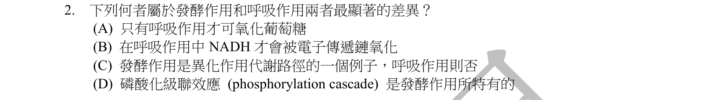
本地原卷PDF2 · 官方原答案PDF1（生物50題） · 已核對同年生物釋疑PDF2–4（未列本題）
官方採計／來源：B 原答案：B
未列本輪取得的109年度生物釋疑PDF2–4；依同年答案，不宣稱沒有其他未取得公告
主分類：Ch09 Cellular Respiration and Fermentation
9.5 / Comparing Fermentation with Anaerobic and Aerobic Respiration
目錄行598；條目起始印刷頁181；實際目錄 PDF37
次分類：Ch09 Cellular Respiration and Fermentation
9.4 / The Pathway of Electron Transport
目錄行582；條目起始印刷頁174；實際目錄 PDF37
主分類理由：9.5 / Comparing Fermentation with Anaerobic and Aerobic Respiration：區分發酵與呼吸回收NAD+的途徑，而非僅比較是否消耗葡萄糖。
次分類理由：9.4 / The Pathway of Electron Transport：呼吸藉電子傳遞鏈把NADH氧化，發酵則把電子交給有機受體。
科學說明：採B。兩者均可有糖解、ATP生成與NADH氧化；差異在NADH是否藉電子傳遞鏈再氧化。不能把所有無氧過程都稱發酵，無氧呼吸仍有電子傳遞鏈。 C把呼吸排除異化作用也錯誤，D的磷酸化級聯並非發酵特有。
來源涵蓋範圍：以本地Campbell實際目錄及列示正文作分類依據，原題限定與同年釋疑另存；不將正文小標冒充目錄條目。
教材正文：印刷174／PDF223、印刷175／PDF224、印刷179／PDF228、印刷180／PDF229、印刷181／PDF230
補充來源：本題未另列課本外來源
另行比較：僅按9.4電子傳遞，會否忽略發酵比較？
四選項問兩過程差異，故9.5比較為主；確認B是NADH經ETC氧化，補列C異化及D級聯的錯誤。
結論：證據確認，分類疑義已解決。完整覆核紀錄
Q03 · 9.4 / Chemiosmosis: The Energy-Coupling Mechanism 正式分類
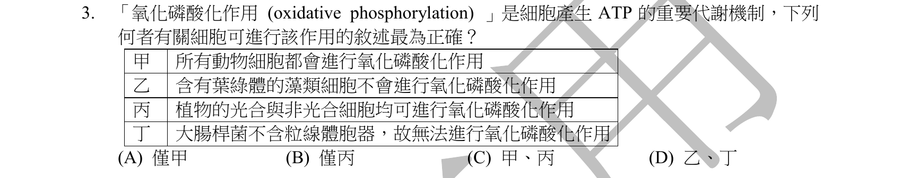
本地原卷PDF2 · 官方原答案PDF1（生物50題） · 同年釋疑PDF2
官方採計／來源：B 原答案：B
109年度釋疑維持B
主分類：Ch09 Cellular Respiration and Fermentation
9.4 / Chemiosmosis: The Energy-Coupling Mechanism
目錄行585；條目起始印刷頁175；實際目錄 PDF37
次分類：Ch10 Photosynthesis
10.3 / A Comparison of Chemiosmosis in Chloroplasts and Mitochondria
目錄行662；條目起始印刷頁199；實際目錄 PDF37
主分類理由：9.4 / Chemiosmosis: The Energy-Coupling Mechanism：表格的共同核心是膜上的電子傳遞、質子梯度與氧化磷酸化。
次分類理由：10.3 / A Comparison of Chemiosmosis in Chloroplasts and Mitochondria：比較粒線體與葉綠體的化學滲透，排除有光合便無呼吸的錯誤推論。
科學說明：採B，僅丙合適，同年釋疑PDF2維持B。成熟哺乳類紅血球無粒線體，因此甲的所有動物細胞過廣；藻類也能呼吸，乙不成立；丙依釋疑限定仍存活的光合與非光合植物細胞；大腸桿菌無粒線體，但能以細胞膜進行呼吸電子傳遞，丁由無粒線體推出無法氧化磷酸化的推論錯誤。
來源涵蓋範圍：以本地Campbell實際目錄及列示正文作分類依據，原題限定與同年釋疑另存；不將正文小標冒充目錄條目。
教材正文：印刷174／PDF223、印刷175／PDF224、印刷176／PDF225、印刷177／PDF226、印刷199／PDF248、印刷200／PDF249
補充來源：本題未另列課本外來源
另行比較：能否把缺粒線體等同不能呼吸？
重看四列表格及同年釋疑：丁是推論錯誤，不是寫ETC位於粒線體。丙依存活細胞限定，B採計與化學滲透主目一致。
結論：證據確認，分類疑義已解決。完整覆核紀錄
Q04 · 27.3 / Nitrogen Metabolism 正式分類
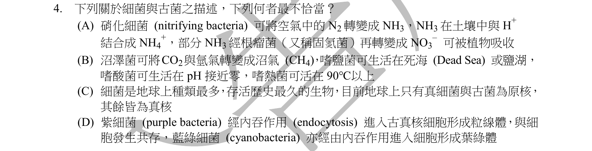
本地原卷PDF2 · 官方原答案PDF1（生物50題） · 已核對同年生物釋疑PDF2–4（未列本題）
官方採計／來源：A 原答案：A
未列本輪取得的109年度生物釋疑PDF2–4；依同年答案，不宣稱沒有其他未取得公告
主分類：Ch27 Bacteria and Archaea
27.3 / Nitrogen Metabolism
目錄行1738；條目起始印刷頁582；實際目錄 PDF42
次分類：Ch06 A Tour of the Cell
6.5 / The Evolutionary Origins of Mitochondria and Chloroplasts
目錄行362；條目起始印刷頁109；實際目錄 PDF36
次分類：Ch27 Bacteria and Archaea
27.4 / Archaea
目錄行1754；條目起始印刷頁585；實際目錄 PDF42
主分類理由：27.3 / Nitrogen Metabolism：辨認固氮菌與硝化菌的氮代謝作用及生活方式被交換。
次分類理由：6.5 / The Evolutionary Origins of Mitochondria and Chloroplasts：內共生起源支援粒線體來源的選項比較；27.4 / Archaea：古菌的甲烷生成及多樣性支援其餘選項判別。
科學說明：採A。根瘤共生固氮菌將N2轉為可用的含氮物；硝化菌氧化氨或亞硝酸鹽，不等同根瘤固氮。甲烷菌屬古菌且適應無氧環境；原核生物的形態、代謝、棲地及營養方式均具多樣性。粒線體內共生來源宜精確表述為細菌祖先，題目的紫色細菌用語保留，不擴寫成所有現生紫色菌。 C的種類最多取決於物種界定與採樣，不能當成已全面計數的結論。
來源涵蓋範圍：以本地Campbell實際目錄及列示正文作分類依據，原題限定與同年釋疑另存；不將正文小標冒充目錄條目。
教材正文：印刷109／PDF158、印刷110／PDF159、印刷581／PDF630、印刷582／PDF631、印刷583／PDF632、印刷585／PDF634、印刷586／PDF635
補充來源：本題未另列課本外來源
另行比較：是原核分類還是氮代謝為決勝？
A完整句把固氮與硝化兩步互換；氮代謝最直接。古菌及內共生為具實質核查的次目，C的最多不作全面計數保證。
結論：證據確認，分類疑義已解決。完整覆核紀錄
Q05 · 17.4 / Molecular Components of Translation 正式分類
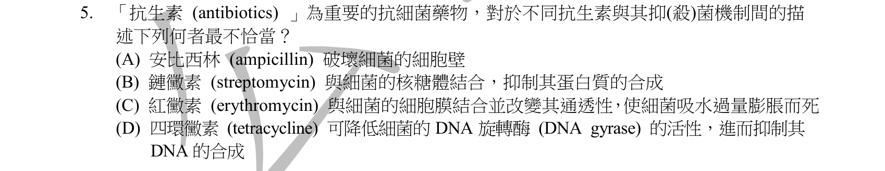
本地原卷PDF2 · 官方原答案PDF1（生物50題） · 同年釋疑PDF2
官方採計／來源：C或D 原答案：C
109.6.8更新釋疑明示C改為C或D
主分類：Ch17 Gene Expression: From Gene to Protein
17.4 / Molecular Components of Translation
目錄行1069；條目起始印刷頁348；實際目錄 PDF39
次分類：Ch27 Bacteria and Archaea
27.1 / Cell-Surface Structures
目錄行1709；條目起始印刷頁574；實際目錄 PDF42
主分類理由：17.4 / Molecular Components of Translation：兩個被正式接受的錯誤配對都涉及抗生素對細菌核糖體與蛋白質合成的作用。
次分類理由：27.1 / Cell-Surface Structures：Ampicillin抑制肽聚糖細胞壁建構，須區分細胞壁與細胞膜。
科學說明：原答案C；109.6.8更新釋疑PDF2明示改為C或D。Erythromycin抑制核糖體翻譯，不以破壞細胞膜為主要機制；Tetracycline也作用於核糖體，不以DNA gyrase為主要標的；Streptomycin干擾核糖體，Ampicillin干擾細胞壁合成。釋疑把膜通透性受影響概括為壁受損的說法不可當成壁、膜同一構造；採計更正與機制說明分列。
來源涵蓋範圍：以本地Campbell實際目錄及列示正文作分類依據，原題限定與同年釋疑另存；不將正文小標冒充目錄條目。
教材正文：印刷348／PDF397、印刷349／PDF398、印刷350／PDF399、印刷574／PDF623、印刷575／PDF624、印刷588／PDF637、印刷589／PDF638
補充來源：本題未另列課本外來源
另行比較：僅依原答案C或需把D納入？
重看A–D及釋疑原圖PDF2，公告明示C或D；原C另保留。主翻譯核糖體、次細胞壁，不混淆膜與壁。
結論：證據確認，分類疑義已解決。完整覆核紀錄
Q06 · 8.4 / Effects of Local Conditions on Enzyme Activity 正式分類
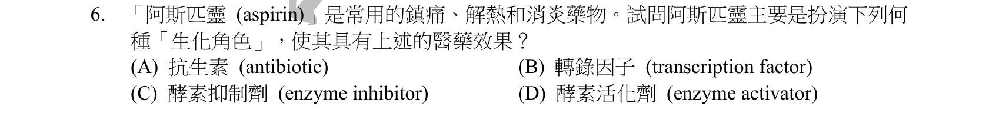
本地原卷PDF2 · 官方原答案PDF1（生物50題） · 已核對同年生物釋疑PDF2–4（未列本題）
官方採計／來源：C 原答案：C
未列本輪取得的109年度生物釋疑PDF2–4；依同年答案，不宣稱沒有其他未取得公告
主分類：Ch08 An Introduction to Metabolism
8.4 / Effects of Local Conditions on Enzyme Activity
目錄行529；條目起始印刷頁157；實際目錄 PDF37
主分類理由：8.4 / Effects of Local Conditions on Enzyme Activity：Aspirin的主要藥理作用屬酵素抑制，對應本地目錄中涵蓋抑制劑的最小條目。
次分類理由：無另列最小次條目；原圖三個干擾選項已逐一讀回並修正首稿描述；Aspirin酵素抑制機制可確定8.4最小條目，不因藥名另加人體系統。
科學說明：採C，酵素抑制劑。Aspirin抑制cyclooxygenase及前列腺素生成；不可把它歸為抗生素、轉錄因子或酵素活化劑。教材支援抑制原理，Aspirin專名機制另以Vane作者文獻摘要補足，未宣稱已閱讀1971全文。
來源涵蓋範圍：教材支援分類原理，未直接涵蓋的專名與細節由同年釋疑／具名補充來源補足；實讀範圍與下載限制見來源紀錄。
教材正文：印刷157／PDF206、印刷158／PDF207、印刷159／PDF208
補充來源：S06
另行比較：是否屬抗生素、轉錄因子或酵素活化劑？
原圖三個干擾選項已逐一讀回並修正首稿描述；Aspirin酵素抑制機制可確定8.4最小條目，不因藥名另加人體系統。
結論：證據確認，分類疑義已解決。完整覆核紀錄
Q07 · 6.5 / Peroxisomes: Oxidation 正式分類
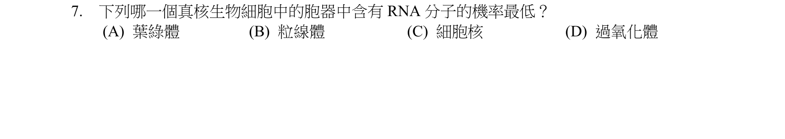
本地原卷PDF2 · 官方原答案PDF1（生物50題） · 已核對同年生物釋疑PDF2–4（未列本題）
官方採計／來源：D 原答案：D
未列本輪取得的109年度生物釋疑PDF2–4；依同年答案，不宣稱沒有其他未取得公告
主分類：Ch06 A Tour of the Cell
6.5 / Peroxisomes: Oxidation
目錄行371；條目起始印刷頁112；實際目錄 PDF36
次分類：Ch06 A Tour of the Cell
6.3 / The Nucleus: Information Central
目錄行333；條目起始印刷頁102；實際目錄 PDF36
次分類：Ch06 A Tour of the Cell
6.5 / The Evolutionary Origins of Mitochondria and Chloroplasts
目錄行362；條目起始印刷頁109；實際目錄 PDF36
主分類理由：6.5 / Peroxisomes: Oxidation：含RNA機率的比較須識別過氧化體不具自身基因體與核糖體。
次分類理由：6.3 / The Nucleus: Information Central：細胞核具轉錄與核仁rRNA來源；6.5 / The Evolutionary Origins of Mitochondria and Chloroplasts：粒線體及葉綠體保有DNA與核糖體，與過氧化體比較。
科學說明：採D過氧化體。核內有多種RNA；粒線體與葉綠體有自身基因表現系統。這是四種胞器的相對比較，不宣稱過氧化體或其相關分離樣本絕對沒有任何RNA。
來源涵蓋範圍：以本地Campbell實際目錄及列示正文作分類依據，原題限定與同年釋疑另存；不將正文小標冒充目錄條目。
教材正文：印刷102／PDF151、印刷103／PDF152、印刷109／PDF158、印刷110／PDF159、印刷111／PDF160、印刷112／PDF161
補充來源：本題未另列課本外來源
另行比較：問RNA量還是含RNA機率？
原題為含RNA機率最低，修正首稿字眼；過氧化體與核、粒線體葉綠體基因系統比較，沒有宣稱絕對零RNA。
結論：證據確認，分類疑義已解決。完整覆核紀錄
Q08 · 11.2 / Receptors in the Plasma Membrane 正式分類
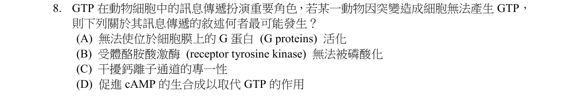
本地原卷PDF3 · 官方原答案PDF1（生物50題） · 已核對同年生物釋疑PDF2–4（未列本題）
官方採計／來源：A 原答案：A
未列本輪取得的109年度生物釋疑PDF2–4；依同年答案，不宣稱沒有其他未取得公告
主分類：Ch11 Cell Communication
11.2 / Receptors in the Plasma Membrane
目錄行708；條目起始印刷頁217；實際目錄 PDF38
主分類理由：11.2 / Receptors in the Plasma Membrane：GTP直接參與G蛋白受器途徑的GDP/GTP交換，須與酪胺酸激酶受器的ATP依賴反應區分。
次分類理由：無另列最小次條目；G蛋白GDP/GTP切換為直接需要，RTK磷酸化用ATP；C、D非直接結果，主受器途徑已足夠。
科學說明：採A。缺GTP不能正常形成活化的G蛋白-GTP；配體結合受器本身與ATP提供的受器磷酸化是不同步驟。題目是指定分子的直接作用比較，不能把長期完全缺GTP仍正常存活當作實驗事實。 無GTP不直接改變鈣通道選擇性，cAMP也不能替代GTP活化G蛋白。
來源涵蓋範圍：以本地Campbell實際目錄及列示正文作分類依據，原題限定與同年釋疑另存；不將正文小標冒充目錄條目。
教材正文：印刷217／PDF266、印刷218／PDF267、印刷219／PDF268、印刷220／PDF269
補充來源：本題未另列課本外來源
另行比較：cAMP替代GTP或鈣通道變選擇性是否可能？
G蛋白GDP/GTP切換為直接需要，RTK磷酸化用ATP；C、D非直接結果，主受器途徑已足夠。
結論：證據確認，分類疑義已解決。完整覆核紀錄
Q09 · 12.2 / Phases of the Cell Cycle 正式分類
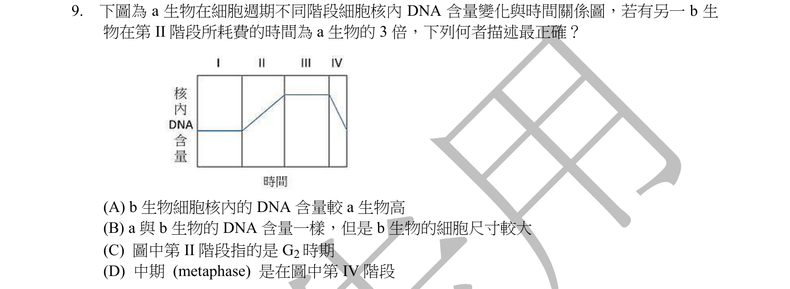
本地原卷PDF3 · 官方原答案PDF1（生物50題） · 已核對同年生物釋疑PDF2–4（未列本題）
官方採計／來源：A 原答案：A
未列本輪取得的109年度生物釋疑PDF2–4；依同年答案，不宣稱沒有其他未取得公告
主分類：Ch12 The Cell Cycle
12.2 / Phases of the Cell Cycle
目錄行770；條目起始印刷頁237；實際目錄 PDF38
次分類：Ch16 The Molecular Basis of Inheritance
16.2 / DNA Replication: A Closer Look
目錄行1010；條目起始印刷頁322；實際目錄 PDF39
主分類理由：12.2 / Phases of the Cell Cycle：依完整DNA含量曲線判讀G1、S、G2與分裂段，分類核心是細胞週期時相。
次分類理由：16.2 / DNA Replication: A Closer Look：S期持續時間與複製起點、複製速率相關，不能無條件當成DNA量的等比例量尺。
科學說明：官方採A。I對應G1、II為S、III為G2，IV涵蓋DNA量下降的分裂區段。b的S期較長，在複製總速率等其他條件相同下可符合較多DNA，但圖未保證全部條件；不能由時間三倍直接證明DNA三倍。D的中期在IV若按整段M期解讀亦有可成立空間，故保留圖區界線與單選唯一性的限制，分類可明確判入細胞週期。
來源涵蓋範圍：以本地Campbell實際目錄及列示正文作分類依據，原題限定與同年釋疑另存；不將正文小標冒充目錄條目。
教材正文：印刷237／PDF286、印刷238／PDF287、印刷239／PDF288、印刷322／PDF371、印刷323／PDF372、印刷324／PDF373
補充來源：本題未另列課本外來源
另行比較：S期三倍是否足以證明DNA量？IV是否整段M期？
逐線讀回I–IV圖，保留速率及區界未明的限制；官方A和D的潛在解讀分開記錄。分類依細胞週期與複製，不用改採計掩蓋題目不足。
結論：證據確認，分類疑義已解決。完整覆核紀錄
Q10 · 12.2 / The Mitotic Spindle: A Closer Look 正式分類
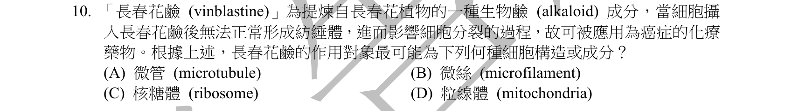
本地原卷PDF3 · 官方原答案PDF1（生物50題） · 已核對同年生物釋疑PDF2–4（未列本題）
官方採計／來源：A 原答案：A
未列本輪取得的109年度生物釋疑PDF2–4；依同年答案，不宣稱沒有其他未取得公告
主分類：Ch12 The Cell Cycle
12.2 / The Mitotic Spindle: A Closer Look
目錄行773；條目起始印刷頁240；實際目錄 PDF38
次分類：Ch06 A Tour of the Cell
6.6 / Components of the Cytoskeleton
目錄行381；條目起始印刷頁113；實際目錄 PDF36
主分類理由：12.2 / The Mitotic Spindle: A Closer Look：Vinblastine干擾紡錘絲的機制直接決定有絲分裂是否正常進行。
次分類理由：6.6 / Components of the Cytoskeleton：微管由微管蛋白組成，與微絲及中間絲區別。
科學說明：採A微管。紡錘體由微管構成，干擾微管動態可阻斷正常染色體分離；B微絲、C核糖體、D粒線體不是此題紡錘體的構成標的。
來源涵蓋範圍：以本地Campbell實際目錄及列示正文作分類依據，原題限定與同年釋疑另存；不將正文小標冒充目錄條目。
教材正文：印刷113／PDF162、印刷114／PDF163、印刷115／PDF164、印刷240／PDF289、印刷241／PDF290
補充來源：本題未另列課本外來源
另行比較：6.6微管概論是否比12.2紡錘體更貼題？
題幹明示無法形成紡錘體，故12.2為主；原C、D為核糖體與粒線體已讀回，6.6僅作微管結構次目。
結論：證據確認，分類疑義已解決。完整覆核紀錄
Q11 · 13.3 / A Comparison of Mitosis and Meiosis 正式分類
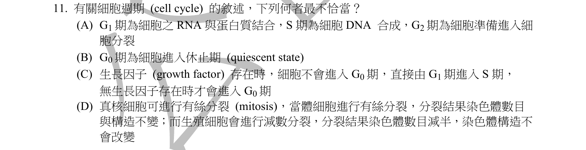
本地原卷PDF3 · 官方原答案PDF1（生物50題） · 同年釋疑PDF3
官方採計／來源：D 原答案：D
109年度釋疑維持D
主分類：Ch13 Meiosis and Sexual Life Cycles
13.3 / A Comparison of Mitosis and Meiosis
目錄行843；條目起始印刷頁262；實際目錄 PDF38
次分類：Ch12 The Cell Cycle
12.2 / Phases of the Cell Cycle
目錄行770；條目起始印刷頁237；實際目錄 PDF38
次分類：Ch12 The Cell Cycle
12.3 / The Cell Cycle Control System
目錄行789；條目起始印刷頁244；實際目錄 PDF38
主分類理由：13.3 / A Comparison of Mitosis and Meiosis：題目比較有絲分裂與減數分裂的染色體套數及重組結果。
次分類理由：12.2 / Phases of the Cell Cycle：G1、S、G2的物質合成與DNA複製支援A、B選項核查；12.3 / The Cell Cycle Control System：G0及生長因子與檢查點支援C選項限制。
科學說明：官方D，釋疑PDF3維持。減數分裂同源染色體非姊妹染色分體互換可改變等位基因組合，應與肉眼可見的染色體結構異常區分；有絲分裂通常保持套數。釋疑稱有絲分裂不改套數，但原D本已如此寫，理由與原選項並未完全對應。C把有無生長因子當成是否進G0的唯一條件也過度簡化；A的RNA與蛋白質結合不是G1的充分定義；釋疑則以轉錄、轉譯需要RNA與蛋白質結合來解釋此用語。採計與題文限制並存，並非因D獲採計就宣稱其他句無誤。
來源涵蓋範圍：以本地Campbell實際目錄及列示正文作分類依據，原題限定與同年釋疑另存；不將正文小標冒充目錄條目。
教材正文：印刷237／PDF286、印刷238／PDF287、印刷244／PDF293、印刷245／PDF294、印刷246／PDF295、印刷247／PDF296、印刷262／PDF311、印刷263／PDF312、印刷264／PDF313
補充來源：本題未另列課本外來源
另行比較：能否用官方理由直接證明原D唯一錯誤？
重看A的結合、C生長因子唯一條件、D套數與構造敘述；釋疑理由未完全對應原D。維持採計D，減數重組與粗尺度結構異常分開，主13.3並保留12.2、12.3次目。
結論：證據確認，分類疑義已解決。完整覆核紀錄
Q12 · 9.5 / Comparing Fermentation with Anaerobic and Aerobic Respiration 正式分類
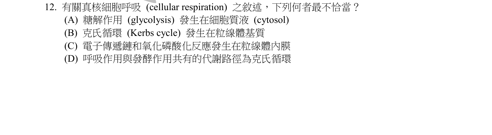
本地原卷PDF3 · 官方原答案PDF1（生物50題） · 已核對同年生物釋疑PDF2–4（未列本題）
官方採計／來源：D 原答案：D
未列本輪取得的109年度生物釋疑PDF2–4；依同年答案，不宣稱沒有其他未取得公告
主分類：Ch09 Cellular Respiration and Fermentation
9.5 / Comparing Fermentation with Anaerobic and Aerobic Respiration
目錄行598；條目起始印刷頁181；實際目錄 PDF37
次分類：Ch09 Cellular Respiration and Fermentation
9.3 / The Citric Acid Cycle
目錄行575；條目起始印刷頁172；實際目錄 PDF37
次分類：Ch09 Cellular Respiration and Fermentation
9.4 / Chemiosmosis: The Energy-Coupling Mechanism
目錄行585；條目起始印刷頁175；實際目錄 PDF37
主分類理由：9.5 / Comparing Fermentation with Anaerobic and Aerobic Respiration：呼吸與發酵的共有途徑為糖解，藉對照兩者能量代謝排除錯誤敘述。
次分類理由：9.3 / The Citric Acid Cycle：檸檬酸循環不是發酵必經步驟；9.4 / Chemiosmosis: The Energy-Coupling Mechanism：氧化磷酸化與發酵的ATP來源不同。
科學說明：採D。發酵藉還原有機分子再生NAD+，其ATP來自糖解的受質層次磷酸化；不能說發酵與細胞呼吸均經檸檬酸循環。呼吸的氧化磷酸化與糖解可並存。
來源涵蓋範圍：以本地Campbell實際目錄及列示正文作分類依據，原題限定與同年釋疑另存；不將正文小標冒充目錄條目。
教材正文：印刷170／PDF219、印刷171／PDF220、印刷172／PDF221、印刷174／PDF223、印刷175／PDF224、印刷179／PDF228、印刷180／PDF229、印刷181／PDF230
補充來源：本題未另列課本外來源
另行比較：是否應以糖解單獨為主？
錯誤D是比較兩路徑共有步驟，9.5比較最直接；A胞質糖解、B基質TCA、C內膜ETC都已看全。
結論：證據確認，分類疑義已解決。完整覆核紀錄
Q13 · 20.1 / Amplifying DNA: The Polymerase Chain Reaction (PCR) and Its Use in DNA Cloning 正式分類
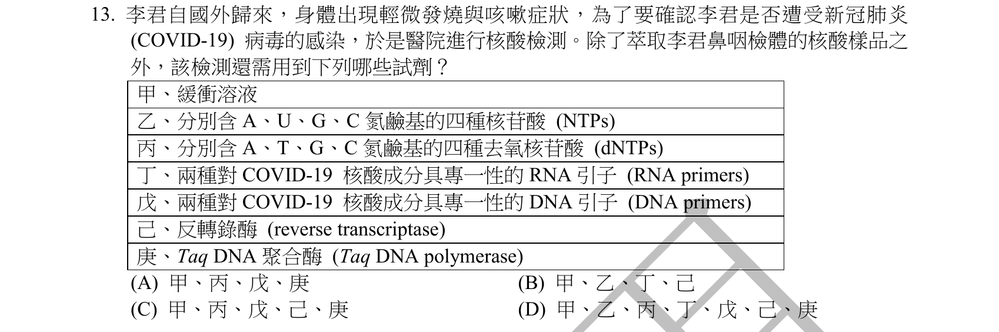
本地原卷PDF4 · 官方原答案PDF1（生物50題） · 同年釋疑PDF3
官方採計／來源：C 原答案：C
109年度釋疑維持C
主分類：Ch20 DNA Tools and Biotechnology
20.1 / Amplifying DNA: The Polymerase Chain Reaction (PCR) and Its Use in DNA Cloning
目錄行1241；條目起始印刷頁420；實際目錄 PDF40
次分類：Ch20 DNA Tools and Biotechnology
20.2 / Analyzing Gene Expression
目錄行1251；條目起始印刷頁423；實際目錄 PDF40
主分類理由：20.1 / Amplifying DNA: The Polymerase Chain Reaction (PCR) and Its Use in DNA Cloning：RNA病毒的RT-PCR檢驗須先逆轉錄，再以DNA聚合酶、DNA引子和dNTP擴增DNA。
次分類理由：20.2 / Analyzing Gene Expression：以逆轉錄取得cDNA是教材分析RNA表現的方法，可用於本題RNA模板前處理。
科學說明：採C，釋疑PDF3維持。反應需適當緩衝液、DNA引子、dNTP、逆轉錄酵素及耐熱DNA聚合酶；用RNA引子或把NTP當DNA延伸原料不符合一般RT-PCR。單管可同時含逆轉錄及PCR成分，不能以PCR字樣排除逆轉錄需求；檢驗目標是RNA病毒，不直接把RNA當Taq的標準DNA模板。
來源涵蓋範圍：以本地Campbell實際目錄及列示正文作分類依據，原題限定與同年釋疑另存；不將正文小標冒充目錄條目。
教材正文：印刷420／PDF469、印刷421／PDF470、印刷422／PDF471、印刷423／PDF472、印刷424／PDF473
補充來源：本題未另列課本外來源
另行比較：RNA病毒是否只需一般PCR四種組分？
七列表格與四選項完整；C包括逆轉錄酵素且用DNA引子及dNTP，與釋疑一致。PCR為主，分析RNA的cDNA方法為同章次目。
結論：證據確認，分類疑義已解決。完整覆核紀錄
Q14 · 6.2 / Comparing Prokaryotic and Eukaryotic Cells 正式分類
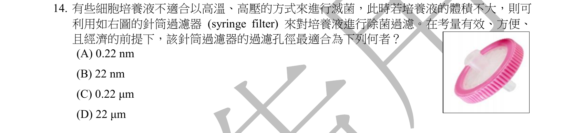
本地原卷PDF4 · 官方原答案PDF1（生物50題） · 同年釋疑PDF3
官方採計／來源：C 原答案：C
109年度釋疑維持C
主分類：Ch06 A Tour of the Cell
6.2 / Comparing Prokaryotic and Eukaryotic Cells
目錄行323；條目起始印刷頁97；實際目錄 PDF36
次分類：Ch27 Bacteria and Archaea
27.1 / Cell-Surface Structures
目錄行1709；條目起始印刷頁574；實際目錄 PDF42
主分類理由：6.2 / Comparing Prokaryotic and Eukaryotic Cells：過濾去菌首先要比較細菌尺寸與濾孔尺寸，分類採細胞的尺度差異。
次分類理由：27.1 / Cell-Surface Structures：細菌的細胞外層與完整細胞尺寸提供被物理截留的對象，並非依細胞壁是否可溶判斷。
科學說明：採C，釋疑PDF3維持。0.22µm等於220nm，是本題便利經濟的去菌孔徑；0.22nm與22nm遠小於一般細菌所需截留尺度，22µm則太大。FDA培養基實驗方法確有0.22µm過濾步驟；不把此孔徑宣稱能去除全部病毒、毒素或所有微生物。釋疑對奈米濾膜離子截留的概括受膜性質影響，不能當成所有膜的普遍性質。
來源涵蓋範圍：教材支援分類原理，未直接涵蓋的專名與細節由同年釋疑／具名補充來源補足；實讀範圍與下載限制見來源紀錄。
教材正文：印刷97／PDF146、印刷98／PDF147、印刷574／PDF623、印刷575／PDF624
補充來源：S14
另行比較：過濾能否分類成細胞膜滲透？
針筒濾器是外加器材，屬尺寸篩分，沒有生物膜滲透壓比較；0.22µm=220nm重算正確，FDA方法支援孔徑而非所有病原移除。
結論：證據確認，分類疑義已解決。完整覆核紀錄
Q15 · 16.2 / Replicating the Ends of DNA Molecules 正式分類
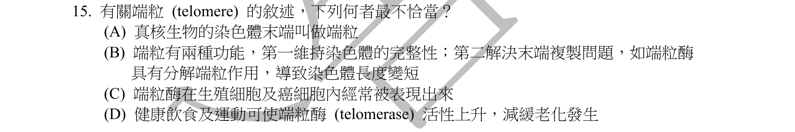
本地原卷PDF4 · 官方原答案PDF1（生物50題） · 已核對同年生物釋疑PDF2–4（未列本題）
官方採計／來源：B 原答案：B
未列本輪取得的109年度生物釋疑PDF2–4；依同年答案，不宣稱沒有其他未取得公告
主分類：Ch16 The Molecular Basis of Inheritance
16.2 / Replicating the Ends of DNA Molecules
目錄行1019；條目起始印刷頁328；實際目錄 PDF39
主分類理由：16.2 / Replicating the Ends of DNA Molecules：端粒縮短及端粒酶補足染色體末端，是判斷錯誤敘述的直接內容。
次分類理由：無另列最小次條目；B與教材作用方向相反，C生殖及癌細胞可有端粒酶；D實驗證據強度另列。單一末端複製目足夠，沒有臆增醫學次章。
科學說明：採B。端粒酶延伸端粒，並非專門把端粒降解；端粒保護末端，複製末端問題可使其縮短。D的生活方式研究只支持特定小樣本條件下端粒酶活性上升的關聯，不能由此保證延緩人體老化；保留題目宣稱與實證強度的差異。
來源涵蓋範圍：教材支援分類原理，未直接涵蓋的專名與細節由同年釋疑／具名補充來源補足；實讀範圍與下載限制見來源紀錄。
教材正文：印刷328／PDF377、印刷329／PDF378
補充來源：S15
另行比較：端粒酶是延長或分解端粒？D是否已證實抗老？
B與教材作用方向相反，C生殖及癌細胞可有端粒酶；D實驗證據強度另列。單一末端複製目足夠，沒有臆增醫學次章。
結論：證據確認，分類疑義已解決。完整覆核紀錄
Q16 · 53.3 / The Logistic Growth Model 正式分類
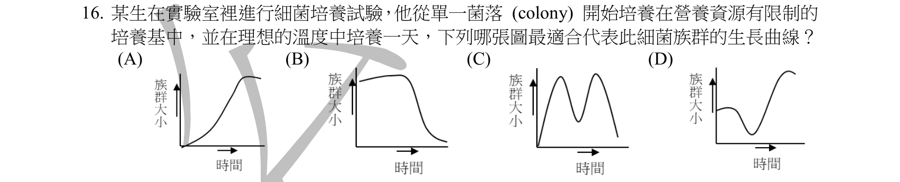
本地原卷PDF4 · 官方原答案PDF1（生物50題） · 同年釋疑PDF3
官方採計／來源：A 原答案：A
109年度釋疑維持A
主分類：Ch53 Population Ecology
53.3 / The Logistic Growth Model
目錄行3551；條目起始印刷頁1198；實際目錄 PDF49
次分類：Ch27 Bacteria and Archaea
27.1 / Reproduction
目錄行1718；條目起始印刷頁577；實際目錄 PDF42
主分類理由：53.3 / The Logistic Growth Model：有限營養使族群增長不能持續指數上升，圖形判讀對應邏輯斯增長模型。
次分類理由：27.1 / Reproduction：細菌分裂繁殖及資源限制提供培養情境，不能將細菌本身歸類取代族群曲線原理。
科學說明：採A，釋疑PDF3維持。題設理想溫度培養一天，封閉培養可先適應、再增長，資源限制後達平台並可衰退；A最接近。教材邏輯斯模型描述接近環境容納量的增長，真實批次培養的遲滯、穩定與死亡期不必是精確數學S曲線，不由未標數值的原圖推造天數或菌數。
來源涵蓋範圍：以本地Campbell實際目錄及列示正文作分類依據，原題限定與同年釋疑另存；不將正文小標冒充目錄條目。
教材正文：印刷577／PDF626、印刷578／PDF627、印刷1196／PDF1245、印刷1197／PDF1246、印刷1198／PDF1247、印刷1199／PDF1248
補充來源：本題未另列課本外來源
另行比較：A的曲線是否必為精確邏輯斯模型？
完整四圖均保留座標，題幹明示一天；A為有限營養的最合理走勢。批次培養與數學模型差異保留，次列細菌繁殖。
結論：證據確認，分類疑義已解決。完整覆核紀錄
Q17 · 14.3 / Extending Mendelian Genetics for Two or More Genes 正式分類
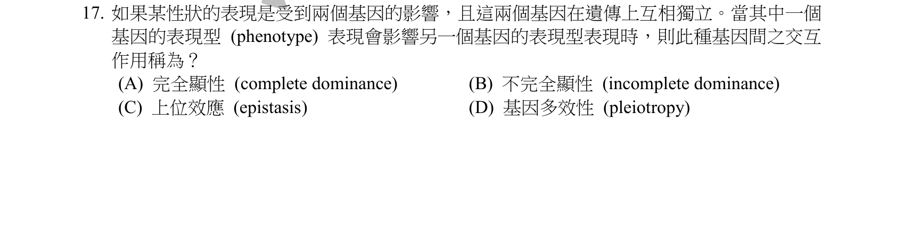
本地原卷PDF4 · 官方原答案PDF1（生物50題） · 已核對同年生物釋疑PDF2–4（未列本題）
官方採計／來源：C 原答案：C
未列本輪取得的109年度生物釋疑PDF2–4；依同年答案，不宣稱沒有其他未取得公告
主分類：Ch14 Mendel and the Gene Idea
14.3 / Extending Mendelian Genetics for Two or More Genes
目錄行895；條目起始印刷頁281；實際目錄 PDF38
主分類理由：14.3 / Extending Mendelian Genetics for Two or More Genes：上位作用是不同基因座間的表型遮蔽，不是同一基因座的顯隱性。
次分類理由：無另列最小次條目；獨立遺傳兩基因座影響表型是C上位作用；A、B同座位顯性及D多效性排除。TOC無獨立Epistasis葉項，採實際兩基因以上最小條目。
科學說明：採C。Epistasis指一個基因影響另一基因的表型表現；同一座位等位基因間的完全顯性與單一基因多效性都不是相同概念。
來源涵蓋範圍：以本地Campbell實際目錄及列示正文作分類依據，原題限定與同年釋疑另存；不將正文小標冒充目錄條目。
教材正文：印刷281／PDF330、印刷282／PDF331
補充來源：本題未另列課本外來源
另行比較：不同基因座互作與等位基因顯性是否混淆？
獨立遺傳兩基因座影響表型是C上位作用；A、B同座位顯性及D多效性排除。TOC無獨立Epistasis葉項，採實際兩基因以上最小條目。
結論：證據確認，分類疑義已解決。完整覆核紀錄
Q18 · 23.2 / The Hardy-Weinberg Equation 正式分類
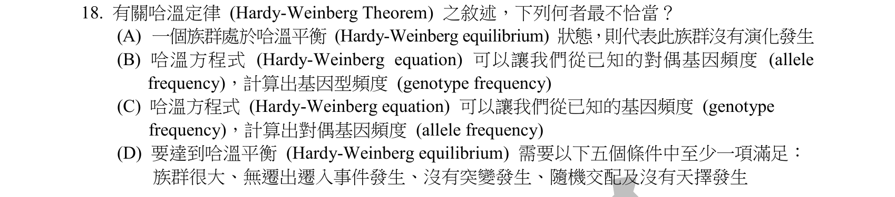
本地原卷PDF5 · 官方原答案PDF1（生物50題） · 已核對同年生物釋疑PDF2–4（未列本題）
官方採計／來源：D 原答案：D
未列本輪取得的109年度生物釋疑PDF2–4；依同年答案，不宣稱沒有其他未取得公告
主分類：Ch23 The Evolution of Populations
23.2 / The Hardy-Weinberg Equation
目錄行1445；條目起始印刷頁490；實際目錄 PDF41
主分類理由：23.2 / The Hardy-Weinberg Equation：判斷Hardy–Weinberg平衡的整組假設，不能把五項同時滿足改成任一項。
次分類理由：無另列最小次條目；D的至少一項不夠；A的無演化限受分析座位。只有平衡方程式最小條目即可涵蓋，沒有為每條件另增泛化章。
科學說明：採D。理想條件包括無突變、隨機交配、無自然選擇、極大族群及無基因流；只滿足至少一項不保證平衡。平衡針對分析的基因座，不意味整個基因組每個座位都無演化。
來源涵蓋範圍：以本地Campbell實際目錄及列示正文作分類依據，原題限定與同年釋疑另存；不將正文小標冒充目錄條目。
教材正文：印刷490／PDF539、印刷491／PDF540、印刷492／PDF541、印刷493／PDF542
補充來源：本題未另列課本外來源
另行比較：五條件任一項或整組條件？
D的至少一項不夠；A的無演化限受分析座位。只有平衡方程式最小條目即可涵蓋，沒有為每條件另增泛化章。
結論：證據確認，分類疑義已解決。完整覆核紀錄
Q19 · 23.2 / The Hardy-Weinberg Equation 正式分類
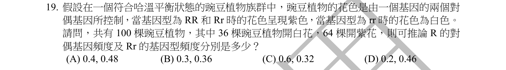
本地原卷PDF5 · 官方原答案PDF1（生物50題） · 已核對同年生物釋疑PDF2–4（未列本題）
官方採計／來源：A 原答案：A
未列本輪取得的109年度生物釋疑PDF2–4；依同年答案，不宣稱沒有其他未取得公告
主分類：Ch23 The Evolution of Populations
23.2 / The Hardy-Weinberg Equation
目錄行1445；條目起始印刷頁490；實際目錄 PDF41
次分類：Ch23 The Evolution of Populations
23.2 / Gene Pools and Allele Frequencies
目錄行1442；條目起始印刷頁490；實際目錄 PDF41
主分類理由：23.2 / The Hardy-Weinberg Equation：由隱性表型比例解出等位基因頻率，再算異型合子比例。
次分類理由：23.2 / Gene Pools and Allele Frequencies：區分表型比例、基因型比例與基因庫的等位基因頻率。
科學說明：採A。rr=36/100=q²=0.36，故q=0.6、p=0.4，Rr=2pq=0.48，100株中預期48株異型合子；原題要求的R頻率與Rr頻率依序為0.4、0.48；不能把36%直接當q，也不能以顯性表型64%當p。
來源涵蓋範圍：以本地Campbell實際目錄及列示正文作分類依據，原題限定與同年釋疑另存；不將正文小標冒充目錄條目。
教材正文：印刷490／PDF539、印刷491／PDF540、印刷492／PDF541、印刷493／PDF542
補充來源：本題未另列課本外來源
另行比較：0.36為q還是q²？題目要哪兩項？
重算q²=.36、q=.6、p=.4、2pq=.48，答案A要求R與Rr依序。數量單位改為100株，非100隻。
結論：證據確認，分類疑義已解決。完整覆核紀錄
Q20 · 13.3 / Crossing Over and Synapsis During Prophase I 正式分類
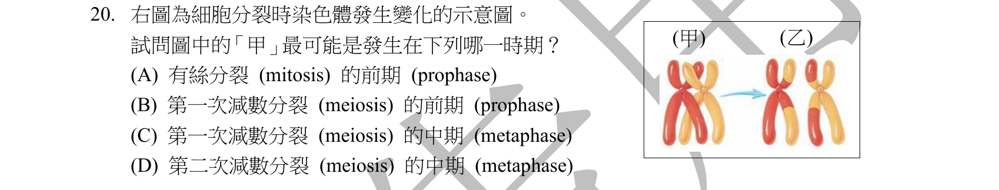
本地原卷PDF5 · 官方原答案PDF1（生物50題） · 已核對同年生物釋疑PDF2–4（未列本題）
官方採計／來源：B 原答案：B
未列本輪取得的109年度生物釋疑PDF2–4；依同年答案，不宣稱沒有其他未取得公告
主分類：Ch13 Meiosis and Sexual Life Cycles
13.3 / Crossing Over and Synapsis During Prophase I
目錄行840；條目起始印刷頁262；實際目錄 PDF38
次分類：Ch13 Meiosis and Sexual Life Cycles
13.3 / The Stages of Meiosis
目錄行837；條目起始印刷頁259；實際目錄 PDF38
主分類理由：13.3 / Crossing Over and Synapsis During Prophase I：完整互換圖顯示減數第一次分裂前期I的同源非姊妹染色分體交換。
次分類理由：13.3 / The Stages of Meiosis：在減數分裂階段中定位聯會及互換，排除第二次分裂等階段。
科學說明：採B。圖的同源染色體配對及片段交換對應前期I；姊妹染色分體分離是後期II，與圖示重組事件不同。
來源涵蓋範圍：以本地Campbell實際目錄及列示正文作分類依據，原題限定與同年釋疑另存；不將正文小標冒充目錄條目。
教材正文：印刷259／PDF308、印刷260／PDF309、印刷261／PDF310、印刷262／PDF311、印刷263／PDF312
補充來源：本題未另列課本外來源
Q21 · 20.2 / Determining Gene Function 正式分類
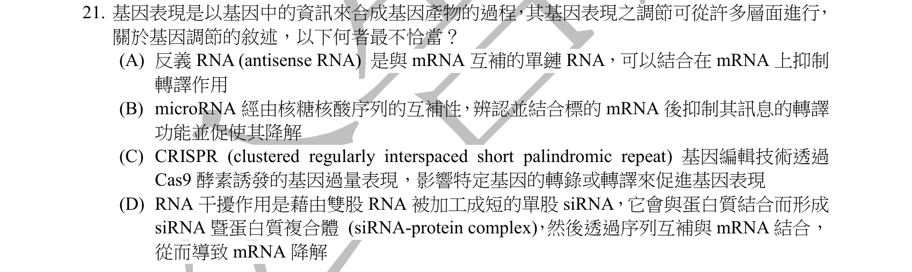
本地原卷PDF5 · 官方原答案PDF1（生物50題） · 已核對同年生物釋疑PDF2–4（未列本題）
官方採計／來源：C 原答案：C
未列本輪取得的109年度生物釋疑PDF2–4；依同年答案，不宣稱沒有其他未取得公告
主分類：Ch20 DNA Tools and Biotechnology
20.2 / Determining Gene Function
目錄行1254；條目起始印刷頁426；實際目錄 PDF40
次分類：Ch18 Regulation of Gene Expression
18.3 / Effects on mRNAs by MicroRNAs and Small Interfering RNAs
目錄行1136；條目起始印刷頁379；實際目錄 PDF39
主分類理由：20.2 / Determining Gene Function：由各方法對基因功能的實驗用途判斷CRISPR/Cas9被錯述為直接使目標基因大量表現。
次分類理由：18.3 / Effects on mRNAs by MicroRNAs and Small Interfering RNAs：miRNA及siRNA透過序列配對降低mRNA表現，與antisense的抑制用途比較。
科學說明：採C。標準CRISPR/Cas9以引導RNA定位並切割DNA，可用於破壞或編輯基因；不是Cas9加入就大量表現目標基因。改造dCas9融合活化域可做CRISPRa，屬不同配置，不能拿來替原選項無條件背書。miRNA、siRNA及反義RNA可影響RNA穩定性或翻譯，但具體機制不完全相同。
來源涵蓋範圍：以本地Campbell實際目錄及列示正文作分類依據，原題限定與同年釋疑另存；不將正文小標冒充目錄條目。
教材正文：印刷379／PDF428、印刷380／PDF429、印刷426／PDF475、印刷427／PDF476
補充來源：本題未另列課本外來源
另行比較：CRISPRa能否替原C辯護？
原C未描述dCas9活化系統，不能用改造技術替標準Cas9過量表現說法背書。RNAi及反義分子比較另存次目。
結論：證據確認，分類疑義已解決。完整覆核紀錄
Q22 · 18.2 / Regulation of Chromatin Structure 正式分類
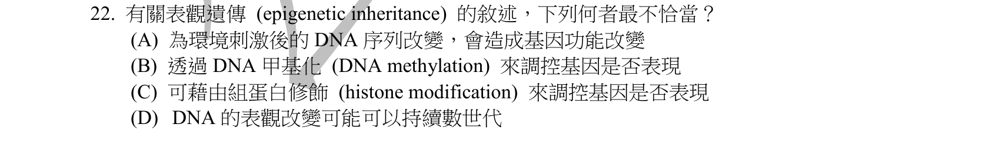
本地原卷PDF5 · 官方原答案PDF1（生物50題） · 已核對同年生物釋疑PDF2–4（未列本題）
官方採計／來源：A 原答案：A
未列本輪取得的109年度生物釋疑PDF2–4；依同年答案，不宣稱沒有其他未取得公告
主分類：Ch18 Regulation of Gene Expression
18.2 / Regulation of Chromatin Structure
目錄行1123；條目起始印刷頁371；實際目錄 PDF39
主分類理由：18.2 / Regulation of Chromatin Structure：表觀遺傳著重染色質修飾與表現狀態，而非DNA鹼基序列改變。
次分類理由：無另列最小次條目；A將序列改變作定義不成立；B、C修飾及D可能跨代須保留條件。直接選染色質調節，沒有另增突變主目。
科學說明：採A。DNA甲基化、組蛋白修飾等可改變基因表現而不更改核苷酸序列；某些狀態可跨細胞分裂或在特定情況跨世代延續，不能說每種表觀修飾均永久遺傳。
來源涵蓋範圍：以本地Campbell實際目錄及列示正文作分類依據，原題限定與同年釋疑另存；不將正文小標冒充目錄條目。
教材正文：印刷371／PDF420、印刷372／PDF421、印刷373／PDF422
補充來源：本題未另列課本外來源
另行比較：表觀遺傳會否改DNA序列？
A將序列改變作定義不成立；B、C修飾及D可能跨代須保留條件。直接選染色質調節，沒有另增突變主目。
結論：證據確認，分類疑義已解決。完整覆核紀錄
Q23 · 26.1 / What We Can and Cannot Learn from Phylogenetic Trees 正式分類
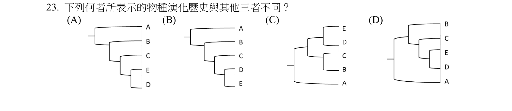
本地原卷PDF5 · 官方原答案PDF1（生物50題） · 已核對同年生物釋疑PDF2–4（未列本題）
官方採計／來源：C 原答案：C
未列本輪取得的109年度生物釋疑PDF2–4；依同年答案，不宣稱沒有其他未取得公告
主分類：Ch26 Phylogeny and the Tree of Life
26.1 / What We Can and Cannot Learn from Phylogenetic Trees
目錄行1636；條目起始印刷頁555；實際目錄 PDF42
主分類理由：26.1 / What We Can and Cannot Learn from Phylogenetic Trees：四幅演化樹須比較共同祖先及分支拓樸，不以左右順序認定差異。
次分類理由：無另列最小次條目；重畫根後群集：A/B/D含DE、CDE、BCDE；C含DE、BC、BCDE。僅C多BC且無CDE，完整樹圖底端均保留。
科學說明：採C。A、B、D旋轉節點後均可寫為(A,(B,(C,(D,E))))；C為(A,((B,C),(D,E)))，多出B與C互為姊妹群的關係。判定依根與分支點，圖上相鄰距離或枝條角度不是親緣遠近量尺。
來源涵蓋範圍：以本地Campbell實際目錄及列示正文作分類依據，原題限定與同年釋疑另存；不將正文小標冒充目錄條目。
教材正文：印刷555／PDF604、印刷556／PDF605、印刷557／PDF606
補充來源：本題未另列課本外來源
另行比較：四圖僅旋轉還是拓樸不同？
重畫根後群集：A/B/D含DE、CDE、BCDE；C含DE、BC、BCDE。僅C多BC且無CDE，完整樹圖底端均保留。
結論：證據確認，分類疑義已解決。完整覆核紀錄
Q24 · 24.1 / The Biological Species Concept 正式分類
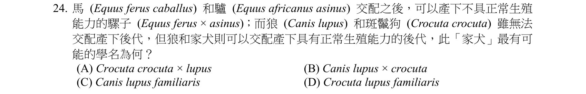
本地原卷PDF6 · 官方原答案PDF1（生物50題） · 已核對同年生物釋疑PDF2–4（未列本題）
官方採計／來源：C 原答案：C
未列本輪取得的109年度生物釋疑PDF2–4；依同年答案，不宣稱沒有其他未取得公告
主分類：Ch24 The Origin of Species
24.1 / The Biological Species Concept
目錄行1488；條目起始印刷頁507；實際目錄 PDF41
次分類：Ch26 Phylogeny and the Tree of Life
26.1 / Binomial Nomenclature
目錄行1627；條目起始印刷頁554；實際目錄 PDF42
主分類理由：24.1 / The Biological Species Concept：題幹以可產生可育後代與生殖隔離來區分狼、狗及馬驢。
次分類理由：26.1 / Binomial Nomenclature：學名的屬名、種名及亞種名對應Canis lupus familiaris的三名結構。
科學說明：採C，依題目採用的分類把家犬列Canis lupus familiaris。狼與犬可產生可育後代符合題設同種判斷；馬驢的雜種通常不育是受精後隔離例子。此處依題目物種概念與命名慣例，不把單次可雜交視作所有生物物種劃分的充分必要條件。
來源涵蓋範圍：以本地Campbell實際目錄及列示正文作分類依據，原題限定與同年釋疑另存；不將正文小標冒充目錄條目。
教材正文：印刷507／PDF556、印刷508／PDF557、印刷509／PDF558、印刷554／PDF603、印刷555／PDF604
補充來源：本題未另列課本外來源
另行比較：學名僅憑字串還是生殖隔離原理？
題幹先給狼犬可育及馬驢不育，以生物物種概念為主；C三名法為次，狼與鬣狗不同屬的線索保留。
結論：證據確認，分類疑義已解決。完整覆核紀錄
Q25 · 31.1 / Nutrition and Ecology 正式分類
本地原卷PDF6 · 官方原答案PDF1（生物50題） · 已核對同年生物釋疑PDF2–4（未列本題）
官方採計／來源：B 原答案：B
未列本輪取得的109年度生物釋疑PDF2–4；依同年答案，不宣稱沒有其他未取得公告
主分類：Ch31 Fungi
31.1 / Nutrition and Ecology
目錄行1966；條目起始印刷頁655；實際目錄 PDF43
主分類理由：31.1 / Nutrition and Ecology：冬蟲夏草涉及真菌以昆蟲為宿主取得養分，屬真菌營養與寄生生態。
次分類理由：無另列最小次條目；B為昆蟲被真菌寄生，原圖A/C/D三種共生比較已全讀；選31.1營養生態，p669正文標題沒有冒充TOC條目。
科學說明：採B。冬蟲夏草是真菌寄生昆蟲形成的複合體，不是昆蟲與真菌的互利或片利共生，更非昆蟲與植物互利。Campbell p655、669提供真菌吸收營養及寄生原理；Ophiocordyceps sinensis侵入Thitarodes幼蟲的專名關係由具名原始研究補足。p669正文Fungi as Parasites沒有列入本地實際目錄，不冒充最小目錄條目。
來源涵蓋範圍：教材支援分類原理，未直接涵蓋的專名與細節由同年釋疑／具名補充來源補足；實讀範圍與下載限制見來源紀錄。
教材正文：印刷655／PDF704、印刷656／PDF705、印刷667／PDF716、印刷668／PDF717、印刷669／PDF718
補充來源：S25
另行比較：寄生與互利、片利是否可混用？
B為昆蟲被真菌寄生，原圖A/C/D三種共生比較已全讀；選31.1營養生態，p669正文標題沒有冒充TOC條目。
結論：證據確認，分類疑義已解決。完整覆核紀錄
Q26 · 6.2 / Comparing Prokaryotic and Eukaryotic Cells 正式分類
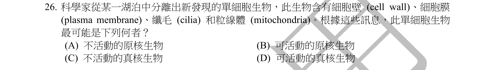
本地原卷PDF6 · 官方原答案PDF1（生物50題） · 已核對同年生物釋疑PDF2–4（未列本題）
官方採計／來源：D 原答案：D
未列本輪取得的109年度生物釋疑PDF2–4；依同年答案，不宣稱沒有其他未取得公告
主分類：Ch06 A Tour of the Cell
6.2 / Comparing Prokaryotic and Eukaryotic Cells
目錄行323；條目起始印刷頁97；實際目錄 PDF36
次分類：Ch06 A Tour of the Cell
6.6 / Components of the Cytoskeleton
目錄行381；條目起始印刷頁113；實際目錄 PDF36
主分類理由：6.2 / Comparing Prokaryotic and Eukaryotic Cells：粒線體指出真核組織，細胞壁本身不足以把該細胞判成原核。
次分類理由：6.6 / Components of the Cytoskeleton：纖毛的微管結構及運動功能解釋游動能力選項。
科學說明：採D。粒線體是膜包覆胞器，支持真核細胞；具有細胞壁的真核生物仍可能存在，不能據壁判細菌。纖毛可提供運動，且不同於細菌旗毛的構造。
來源涵蓋範圍：以本地Campbell實際目錄及列示正文作分類依據，原題限定與同年釋疑另存；不將正文小標冒充目錄條目。
教材正文：印刷97／PDF146、印刷98／PDF147、印刷113／PDF162、印刷114／PDF163、印刷115／PDF164、印刷116／PDF165
補充來源：本題未另列課本外來源
另行比較：細胞壁是否可否定粒線體指出的真核身份？
否；原D是可活動真核。纖毛活動次目保存，不因細胞壁單一線索誤判原核。
結論：證據確認，分類疑義已解決。完整覆核紀錄
Q27 · 10.3 / A Photosystem: A Reaction-Center Complex Associated with Light-Harvesting Complexes 正式分類
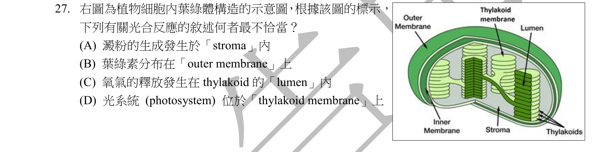
本地原卷PDF6 · 官方原答案PDF1（生物50題） · 已核對同年生物釋疑PDF2–4（未列本題）
官方採計／來源：B 原答案：B
未列本輪取得的109年度生物釋疑PDF2–4；依同年答案，不宣稱沒有其他未取得公告
主分類：Ch10 Photosynthesis
10.3 / A Photosystem: A Reaction-Center Complex Associated with Light-Harvesting Complexes
目錄行653；條目起始印刷頁195；實際目錄 PDF37
次分類：Ch10 Photosynthesis
10.2 / Chloroplasts: The Sites of Photosynthesis in Plants
目錄行631；條目起始印刷頁189；實際目錄 PDF37
次分類：Ch10 Photosynthesis
10.3 / Linear Electron Flow
目錄行656；條目起始印刷頁197；實際目錄 PDF37
主分類理由：10.3 / A Photosystem: A Reaction-Center Complex Associated with Light-Harvesting Complexes：圖中光合色素與光系統位於類囊體膜，定位是錯誤選項的關鍵。
次分類理由：10.2 / Chloroplasts: The Sites of Photosynthesis in Plants：葉綠體基質、膜與類囊體構造支援圖上位置；10.3 / Linear Electron Flow：水分解釋出氧及質子支援腔內側反應。
科學說明：採B。葉綠素與光系統嵌於類囊體膜，不位於葉綠體外膜；澱粉可累積於基質。PSII的水氧化在類囊體腔側釋出O2及H+；不要把C選項的產氧位置誤當Calvin循環產氧。
來源涵蓋範圍：以本地Campbell實際目錄及列示正文作分類依據，原題限定與同年釋疑另存；不將正文小標冒充目錄條目。
教材正文：印刷189／PDF238、印刷190／PDF239、印刷191／PDF240、印刷195／PDF244、印刷196／PDF245、印刷197／PDF246、印刷198／PDF247
補充來源：本題未另列課本外來源
另行比較：圖是氧氣標記還是胞器結構標記？
原圖只有膜、基質、腔等結構，已修正首稿O2標記說法；C為文字產氧選項。B外膜位置錯，光系統主目與圖示次目相合。
結論：證據確認，分類疑義已解決。完整覆核紀錄
Q28 · 30.2 / Gymnosperm Diversity 正式分類
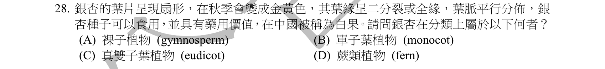
本地原卷PDF6 · 官方原答案PDF1（生物50題） · 已核對同年生物釋疑PDF2–4（未列本題）
官方採計／來源：A 原答案：A
未列本輪取得的109年度生物釋疑PDF2–4；依同年答案，不宣稱沒有其他未取得公告
主分類：Ch30 Plant Diversity II: The Evolution of Seed Plants
30.2 / Gymnosperm Diversity
目錄行1932；條目起始印刷頁641；實際目錄 PDF43
主分類理由：30.2 / Gymnosperm Diversity：扇形落葉、裸露種子等線索對應裸子植物的銀杏類群。
次分類理由：無另列最小次條目；題幹已給銀杏，A為裸子植物，修正首稿答案標籤。平行葉脈原文及二歧文獻差異保留，主30.2多樣性。
科學說明：採A裸子植物；題幹已明示銀杏。Campbell p642明列Ginkgo biloba扇形秋黃葉及具肉質外層的種子。原題稱平行葉脈不夠準確，銀杏具有反覆二歧分叉的葉脈；保留原文並以植物形態原始文獻補充，不改寫題幹後再宣稱無差異。
來源涵蓋範圍：教材支援分類原理，未直接涵蓋的專名與細節由同年釋疑／具名補充來源補足；實讀範圍與下載限制見來源紀錄。
教材正文：印刷641／PDF690、印刷642／PDF691、印刷643／PDF692
補充來源：S28
另行比較：A是銀杏名稱還是裸子植物分類？
題幹已給銀杏，A為裸子植物，修正首稿答案標籤。平行葉脈原文及二歧文獻差異保留，主30.2多樣性。
結論：證據確認，分類疑義已解決。完整覆核紀錄
Q29 · 36.4 / Stimuli for Stomatal Opening and Closing 正式分類
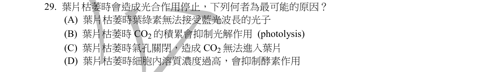
本地原卷PDF6 · 官方原答案PDF1（生物50題） · 已核對同年生物釋疑PDF2–4（未列本題）
官方採計／來源：C 原答案：C
未列本輪取得的109年度生物釋疑PDF2–4；依同年答案，不宣稱沒有其他未取得公告
主分類：Ch36 Resource Acquisition and Transport in Vascular Plants
36.4 / Stimuli for Stomatal Opening and Closing
目錄行2397；條目起始印刷頁798；實際目錄 PDF45
次分類：Ch10 Photosynthesis
10.5 / Photorespiration: An Evolutionary Relic?
目錄行673；條目起始印刷頁203；實際目錄 PDF37
主分類理由：36.4 / Stimuli for Stomatal Opening and Closing：失水導致氣孔關閉，限制CO2進入，是題目問光合作用降低的主要近因。
次分類理由：10.5 / Photorespiration: An Evolutionary Relic?：CO2下降與光呼吸及碳固定效率的關係支援代謝端解釋。
科學說明：採C。存活葉片因缺水萎凋而關氣孔，CO2供應下降；A不能接受藍光與B的CO2積累抑制光解均非此題通常近因；D的高溶質效應須視失水程度，不能概括所有萎凋。原題枯萎一詞若指不可逆死亡還伴隨其他代謝損傷，本解釋依可調節的水分逆境情境。
來源涵蓋範圍：以本地Campbell實際目錄及列示正文作分類依據，原題限定與同年釋疑另存；不將正文小標冒充目錄條目。
教材正文：印刷203／PDF252、印刷204／PDF253、印刷797／PDF846、印刷798／PDF847
補充來源：本題未另列課本外來源
另行比較：是否可把枯萎只視為失去藍光吸收？
原A是藍光、B是CO2累積、D是高溶質；已按原四項改寫。C在仍存活缺水模型最合理，嚴重損傷限制保留。
結論：證據確認，分類疑義已解決。完整覆核紀錄
Q30 · 35.1 / Common Types of Plant Cells 正式分類
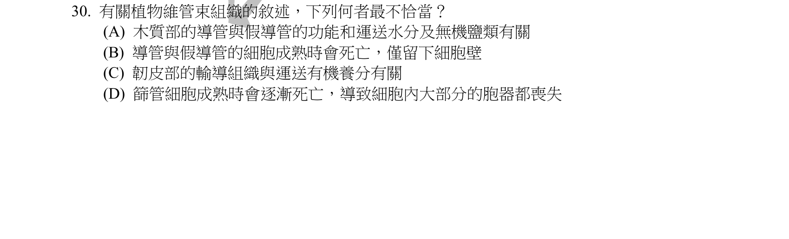
本地原卷PDF6 · 官方原答案PDF1（生物50題） · 已核對同年生物釋疑PDF2–4（未列本題）
官方採計／來源：D 原答案：D
未列本輪取得的109年度生物釋疑PDF2–4；依同年答案，不宣稱沒有其他未取得公告
主分類：Ch35 Vascular Plant Structure, Growth, and Development
35.1 / Common Types of Plant Cells
目錄行2289；條目起始印刷頁763；實際目錄 PDF44
次分類：Ch35 Vascular Plant Structure, Growth, and Development
35.1 / Dermal, Vascular, and Ground Tissues
目錄行2286；條目起始印刷頁762；實際目錄 PDF44
主分類理由：35.1 / Common Types of Plant Cells：木質部導水細胞與韌皮部篩管分子的成熟存活狀態是選項判別點。
次分類理由：35.1 / Dermal, Vascular, and Ground Tissues：維管組織中的木質部、韌皮部負責不同物質運輸。
科學說明：採D。木質部管胞與導管分子成熟時通常死亡且木質化；被子植物篩管分子成熟仍活著，雖缺細胞核且依賴伴細胞。韌皮部運輸糖等有機物；不能以無核等同死細胞。
來源涵蓋範圍：以本地Campbell實際目錄及列示正文作分類依據，原題限定與同年釋疑另存；不將正文小標冒充目錄條目。
教材正文：印刷762／PDF811、印刷763／PDF812、印刷764／PDF813、印刷765／PDF814
補充來源：本題未另列課本外來源
另行比較：成熟無核篩管等同死亡嗎？
否，教材p765明示篩管分子活著並靠伴細胞。A/B導管管胞、C韌皮部養分均看全，主細胞類型而非只選運輸生理。
結論：證據確認，分類疑義已解決。完整覆核紀錄
Q31 · 39.2 / A Survey of Plant Hormones 正式分類
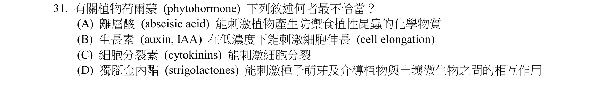
本地原卷PDF7 · 官方原答案PDF1（生物50題） · 已核對同年生物釋疑PDF2–4（未列本題）
官方採計／來源：A 原答案：A
未列本輪取得的109年度生物釋疑PDF2–4；依同年答案，不宣稱沒有其他未取得公告
主分類：Ch39 Plant Responses to Internal and External Signals
39.2 / A Survey of Plant Hormones
目錄行2557；條目起始印刷頁847；實際目錄 PDF45
次分類：Ch39 Plant Responses to Internal and External Signals
39.5 / Defenses Against Herbivores
目錄行2599；條目起始印刷頁867；實際目錄 PDF45
主分類理由：39.2 / A Survey of Plant Hormones：比較ABA、auxin、cytokinin與strigolactone的作用，須看植物激素表及正文。
次分類理由：39.5 / Defenses Against Herbivores：茉莉酸相關植食防禦用來核查ABA選項。
科學說明：採A。ABA主要涉及種子休眠與缺水氣孔調節，本題典型抗植食訊號為jasmonates；生長素在適當濃度促進伸長，細胞分裂素促進分裂。Strigolactone促進某些寄生植物種子萌發及叢枝菌根真菌生長，D若概括所有種子則過廣；原始研究的物種與條件限制另列。
來源涵蓋範圍：教材支援分類原理，未直接涵蓋的專名與細節由同年釋疑／具名補充來源補足；實讀範圍與下載限制見來源紀錄。
教材正文：印刷847／PDF896、印刷848／PDF897、印刷849／PDF898、印刷850／PDF899、印刷851／PDF900、印刷852／PDF901、印刷853／PDF902、印刷854／PDF903、印刷867／PDF916、印刷868／PDF917
補充來源：S31
另行比較：Strigolactone是否促進所有種子？
D適用某些寄生植物種子及菌根交互作用，範圍不能擴大；A的典型抗植食訊號應為jasmonate。ABA不被絕對排除任何免疫串話。
結論：證據確認，分類疑義已解決。完整覆核紀錄
Q32 · 39.2 / A Survey of Plant Hormones 正式分類
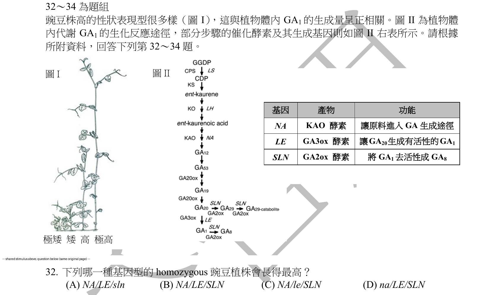
本地原卷PDF7 · 官方原答案PDF1（生物50題） · 已核對同年生物釋疑PDF2–4（未列本題）
官方採計／來源：A 原答案：A
未列本輪取得的109年度生物釋疑PDF2–4；依同年答案，不宣稱沒有其他未取得公告
主分類：Ch39 Plant Responses to Internal and External Signals
39.2 / A Survey of Plant Hormones
目錄行2557；條目起始印刷頁847；實際目錄 PDF45
次分類：Ch14 Mendel and the Gene Idea
14.3 / Extending Mendelian Genetics for Two or More Genes
目錄行895；條目起始印刷頁281；實際目錄 PDF38
主分類理由：39.2 / A Survey of Plant Hormones：以題圖GA合成與降解路徑推算活性赤黴素及莖伸長。
次分類理由：14.3 / Extending Mendelian Genetics for Two or More Genes：三個基因座共同決定路徑產物，須比較基因互作而非單基因顯性。
科學說明：採A，NA/LE/sln保留合成而失去題圖降解步驟，活性GA累積、植株最高。B野生型可合成也可降解；C的le妨礙活性GA形成；D的na在上游受阻。此推算依原題簡化路徑，不把SLN對所有GA底物與組織的活性都當成一致。
來源涵蓋範圍：教材支援分類原理，未直接涵蓋的專名與細節由同年釋疑／具名補充來源補足；實讀範圍與下載限制見來源紀錄。
教材正文：印刷281／PDF330、印刷282／PDF331、印刷847／PDF896、印刷850／PDF899、印刷851／PDF900
補充來源：S32
另行比較：失活基因或合成基因突變何者使植株最高？
逐箭頭重算，NA與LE保留、sln阻止題圖GA失活，A最高。共享題幹、圖I、圖II及右表完整重複在Q32–34。
結論：證據確認，分類疑義已解決。完整覆核紀錄
Q33 · 39.2 / A Survey of Plant Hormones 正式分類
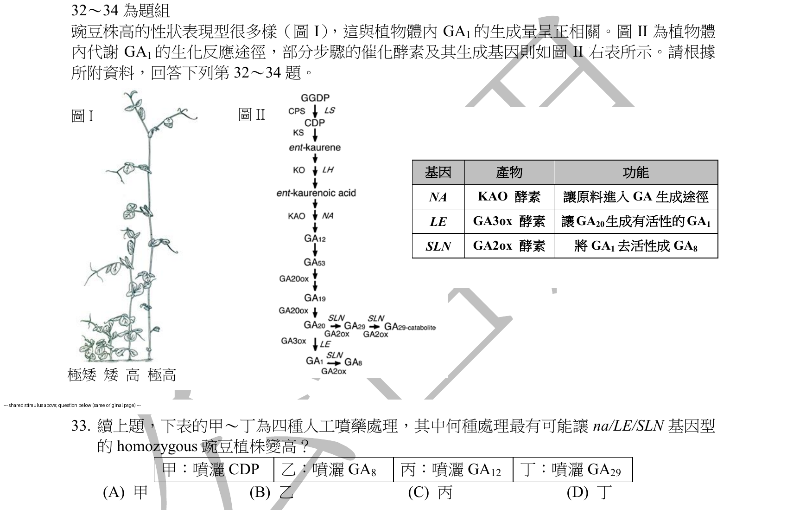
本地原卷PDF7 · 官方原答案PDF1（生物50題） · 已核對同年生物釋疑PDF2–4（未列本題）
官方採計／來源：C 原答案：C
未列本輪取得的109年度生物釋疑PDF2–4；依同年答案，不宣稱沒有其他未取得公告
主分類：Ch39 Plant Responses to Internal and External Signals
39.2 / A Survey of Plant Hormones
目錄行2557；條目起始印刷頁847；實際目錄 PDF45
次分類：Ch08 An Introduction to Metabolism
8.1 / Metabolic Pathways
目錄行478；條目起始印刷頁144；實際目錄 PDF37
主分類理由：39.2 / A Survey of Plant Hormones：矮性突變的GA反應與外加激素救援，須由題圖判定可繞過的阻斷。
次分類理由：8.1 / Metabolic Pathways：代謝反應按酵素催化先後進行，補在阻斷之後才可能恢復下游產物。
科學說明：採C，na/LE/SLN補GA12位於na阻斷之後，可繼續生成活性GA。CDP仍在阻斷上游；GA8及GA29是圖中的失活產物，不能以同屬GA名稱就當成有效救援。
來源涵蓋範圍：教材支援分類原理，未直接涵蓋的專名與細節由同年釋疑／具名補充來源補足；實讀範圍與下載限制見來源紀錄。
教材正文：印刷144／PDF193、印刷145／PDF194、印刷847／PDF896、印刷850／PDF899、印刷851／PDF900
補充來源：S32
另行比較：補上游CDP能否跨na阻斷？
不能；補下游GA12可續行LE步驟，GA8與GA29不能救援，故C。原甲–丁處理表與共用路徑皆讀回。
結論：證據確認，分類疑義已解決。完整覆核紀錄
Q34 · 18.3 / Effects on mRNAs by MicroRNAs and Small Interfering RNAs 正式分類
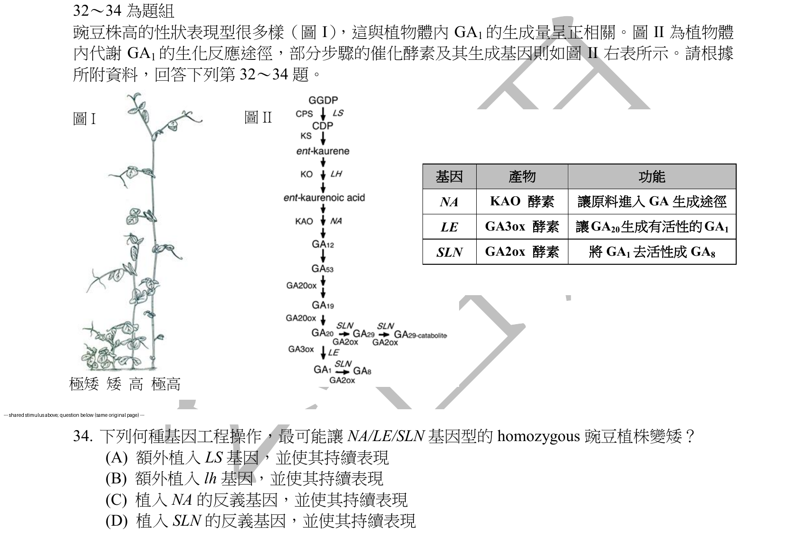
本地原卷PDF7 · 官方原答案PDF1（生物50題） · 已核對同年生物釋疑PDF2–4（未列本題）
官方採計／來源：C 原答案：C
未列本輪取得的109年度生物釋疑PDF2–4；依同年答案，不宣稱沒有其他未取得公告
主分類：Ch18 Regulation of Gene Expression
18.3 / Effects on mRNAs by MicroRNAs and Small Interfering RNAs
目錄行1136；條目起始印刷頁379；實際目錄 PDF39
次分類：Ch39 Plant Responses to Internal and External Signals
39.2 / A Survey of Plant Hormones
目錄行2557；條目起始印刷頁847；實際目錄 PDF45
主分類理由：18.3 / Effects on mRNAs by MicroRNAs and Small Interfering RNAs：反義NA的用途是抑制目標RNA表現，為工程策略的決定步驟。
次分類理由：39.2 / A Survey of Plant Hormones：NA受抑後GA合成下降，連接分子操作到矮株性狀。
科學說明：採C。反義NA降低NA表現，使野生型GA合成受阻而變矮；增加LS不等於降低GA，加入隱性lh不會自動壓過原野生等位基因，反義SLN反而可能減少GA失活而變高。反義RNA與siRNA不必完全同機制，本地目錄以RNA調節的最小可對照條目分類，技術差異明列。
來源涵蓋範圍：教材支援分類原理，未直接涵蓋的專名與細節由同年釋疑／具名補充來源補足；實讀範圍與下載限制見來源紀錄。
教材正文：印刷379／PDF428、印刷380／PDF429、印刷847／PDF896、印刷850／PDF899、印刷851／PDF900
補充來源：S32
另行比較：反義NA與加入隱性lh對野生型效果相同？
不同；反義NA可抑制合成而變矮，lh非自動顯性負作用，反義SLN可能變高。主RNA調節、次GA，且未稱反義RNA就是siRNA。
結論：證據確認，分類疑義已解決。完整覆核紀錄
Q35 · 39.5 / Defenses Against Pathogens 正式分類
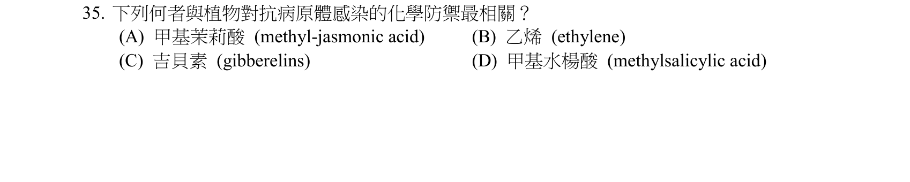
本地原卷PDF7 · 官方原答案PDF1（生物50題） · 同年釋疑PDF4
官方採計／來源：D 原答案：D
109年度釋疑維持D
主分類：Ch39 Plant Responses to Internal and External Signals
39.5 / Defenses Against Pathogens
目錄行2596；條目起始印刷頁866；實際目錄 PDF45
次分類：Ch39 Plant Responses to Internal and External Signals
39.5 / Defenses Against Herbivores
目錄行2599；條目起始印刷頁867；實際目錄 PDF45
主分類理由：39.5 / Defenses Against Pathogens：病原入侵引發的全株系統獲得性抗性及水楊酸訊號，是本題所指防禦。
次分類理由：39.5 / Defenses Against Herbivores：茉莉酸也參與防禦，與植食反應比較可避免把兩種激素混同。
科學說明：採D，釋疑PDF4維持。題本及教材的methylsalicylic acid對應這個情境應精確作methyl salicylate（水楊酸甲酯），遠處組織轉為salicylic acid參與systemic acquired resistance；釋疑所寫response與標準名稱resistance有差異。Park等煙草研究支援MeSA訊號；茉莉酸也可參與抗病，不能說只抗昆蟲或把MeSA當所有物種唯一SAR訊號。
來源涵蓋範圍：教材支援分類原理，未直接涵蓋的專名與細節由同年釋疑／具名補充來源補足；實讀範圍與下載限制見來源紀錄。
教材正文：印刷866／PDF915、印刷867／PDF916、印刷868／PDF917
補充來源：S35
另行比較：MeSA是否等同methylsalicylic acid？
本題D與教材用名需要依SAR情境精確作水楊酸甲酯，原文字不改；官方維持D。茉莉酸也有抗病功能，次列植食防禦為比較不是排他聲明。
結論：證據確認，分類疑義已解決。完整覆核紀錄
Q36 · 38.1 / Fruit Structure and Function 正式分類
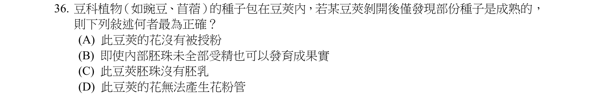
本地原卷PDF8 · 官方原答案PDF1（生物50題） · 已核對同年生物釋疑PDF2–4（未列本題）
官方採計／來源：B 原答案：B
未列本輪取得的109年度生物釋疑PDF2–4；依同年答案，不宣稱沒有其他未取得公告
主分類：Ch38 Angiosperm Reproduction and Biotechnology
38.1 / Fruit Structure and Function
目錄行2501；條目起始印刷頁830；實際目錄 PDF45
次分類：Ch38 Angiosperm Reproduction and Biotechnology
38.1 / Seed Development and Structure
目錄行2495；條目起始印刷頁828；實際目錄 PDF45
主分類理由：38.1 / Fruit Structure and Function：果實由子房發育，不要求一個子房中所有胚珠均成功形成種子。
次分類理由：38.1 / Seed Development and Structure：胚珠受精後形成種子及胚、胚乳發育，解釋同莢成熟與未成熟種子的差異。
科學說明：採B。部分胚珠成功發育仍可形成含有種子的豆莢；不能由一個果實就推斷全部胚珠受精。發育不良的種子也可能受精後敗育，不能全部斷言未受精；成熟豆科種子的養分多可轉入子葉，與完全從未形成胚乳不同。
來源涵蓋範圍：以本地Campbell實際目錄及列示正文作分類依據，原題限定與同年釋疑另存；不將正文小標冒充目錄條目。
教材正文：印刷827／PDF876、印刷828／PDF877、印刷829／PDF878、印刷830／PDF879、印刷831／PDF880、印刷832／PDF881
補充來源：本題未另列課本外來源
另行比較：部分未成熟種子是否證明完全沒授粉？
不能。B表示非全部胚珠受精也可結果，與A/D絕對否定不合；未成熟或敗育不一律等於未受精，種子與果實次序清楚。
結論：證據確認，分類疑義已解決。完整覆核紀錄
Q37 · 39.4 / Environmental Stresses 正式分類
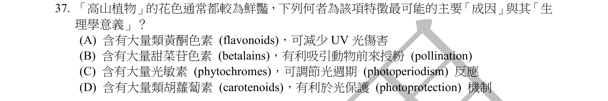
本地原卷PDF8 · 官方原答案PDF1（生物50題） · 同年釋疑PDF4
官方採計／來源：A 原答案：A
109年度釋疑維持A
主分類：Ch39 Plant Responses to Internal and External Signals
39.4 / Environmental Stresses
目錄行2589；條目起始印刷頁862；實際目錄 PDF45
次分類：Ch10 Photosynthesis
10.3 / Photosynthetic Pigments: The Light Receptors
目錄行647；條目起始印刷頁192；實際目錄 PDF37
主分類理由：39.4 / Environmental Stresses：高海拔紫外線情境的色素保護屬植物對非生物環境逆境的反應。
次分類理由：10.3 / Photosynthetic Pigments: The Light Receptors：類胡蘿蔔素具有光保護但不等於本題的類黃酮UV屏蔽，須比較色素功能。
科學說明：採A，釋疑PDF4維持。Flavonoids含花青素等成員，可吸收部分紫外線；Li等擬南芥突變體實驗支持類黃酮對UV-B耐受的貢獻。類胡蘿蔔素也能耗散過量光能，不能因非答案就否認其光保護；單一植物實驗不證明所有高山花色都由同一因素造成。
來源涵蓋範圍：教材支援分類原理，未直接涵蓋的專名與細節由同年釋疑／具名補充來源補足；實讀範圍與下載限制見來源紀錄。
教材正文：印刷192／PDF241、印刷193／PDF242、印刷194／PDF243、印刷195／PDF244、印刷862／PDF911、印刷863／PDF912、印刷864／PDF913、印刷865／PDF914
補充來源：S37
另行比較：D類胡蘿蔔素光保護完全錯嗎？
不是；A是官方主要UV機制，D也有光保護。原B甜菜色素、C光敏素非主要通則，保留花色多因性與原研究物種範圍。
結論：證據確認，分類疑義已解決。完整覆核紀錄
Q38 · 23.3 / Natural Selection 正式分類
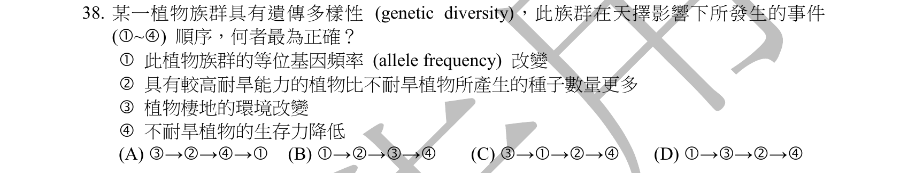
本地原卷PDF8 · 官方原答案PDF1（生物50題） · 已核對同年生物釋疑PDF2–4（未列本題）
官方採計／來源：A 原答案：A
未列本輪取得的109年度生物釋疑PDF2–4；依同年答案，不宣稱沒有其他未取得公告
主分類：Ch23 The Evolution of Populations
23.3 / Natural Selection
目錄行1452；條目起始印刷頁494；實際目錄 PDF41
次分類：Ch23 The Evolution of Populations
23.4 / Natural Selection: A Closer Look
目錄行1465；條目起始印刷頁497；實際目錄 PDF41
主分類理由：23.3 / Natural Selection：環境改變、差異性存活繁殖到等位基因頻率改變，是自然選擇的因果鏈。
次分類理由：23.4 / Natural Selection: A Closer Look：以相對適存度及繁殖成功精確限制事件先後。
科學說明：官方採A（3→2→4→1）。乾旱後抗旱個體較易存活並留下較多後代，世代後相關等位基因頻率改變；2繁殖成功與4存活差異可重疊，典型因果敘述可先談3→4→2→1，選項卻未提供。保留官方A而不宣稱其排列為所有族群唯一時間順序；不把缺水直接造成定向新突變。
來源涵蓋範圍：以本地Campbell實際目錄及列示正文作分類依據，原題限定與同年釋疑另存；不將正文小標冒充目錄條目。
教材正文：印刷493／PDF542、印刷494／PDF543、印刷497／PDF546、印刷498／PDF547
補充來源：本題未另列課本外來源
另行比較：3→2→4→1能作唯一生物學時序嗎？
原A確為此序；其他選項先變等位頻率更不合理，但2與4可重疊或因果相反。保留官方與典型3→4→2→1差異，不把分類待審當採計異議未列的證明。
結論：證據確認，分類疑義已解決。完整覆核紀錄
Q39 · 43.3 / Antibodies as Tools 正式分類
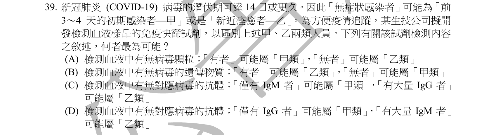
本地原卷PDF8 · 官方原答案PDF1（生物50題） · 已核對同年生物釋疑PDF2–4（未列本題）
官方採計／來源：C 原答案：C
未列本輪取得的109年度生物釋疑PDF2–4；依同年答案，不宣稱沒有其他未取得公告
主分類：Ch43 The Immune System
43.3 / Antibodies as Tools
目錄行2914；條目起始印刷頁969；實際目錄 PDF47
次分類：Ch43 The Immune System
43.3 / B Cells and Antibodies: A Response to Extracellular Pathogens
目錄行2899；條目起始印刷頁964；實際目錄 PDF47
主分類理由：43.3 / Antibodies as Tools：使用血清抗體辨識感染歷程是抗體的檢測工具用途。
次分類理由：43.3 / B Cells and Antibodies: A Response to Extracellular Pathogens：B細胞產生抗體、初次與後續反應的時序支援檢測標的比較。
科學說明：官方採C（IgM、IgG）。此為題目採用的早期與後期簡化模型；SARS-CoV-2的IgM與IgG可接近同時出現，初感染3–4天未必可檢出，不能憑單次IgM/IgG可靠判定剛感染或已痊癒。CDC歷史抗體檢測說明記載感染後1–3週與近同時出現的限制，與Campbell一般免疫原理分列；不把本題當臨床診斷規則。
來源涵蓋範圍：教材支援分類原理，未直接涵蓋的專名與細節由同年釋疑／具名補充來源補足；實讀範圍與下載限制見來源紀錄。
教材正文：印刷958／PDF1007、印刷959／PDF1008、印刷960／PDF1009、印刷961／PDF1010、印刷962／PDF1011、印刷964／PDF1013、印刷965／PDF1014、印刷966／PDF1015、印刷969／PDF1018
補充來源：S39
另行比較：僅IgM能否可靠辨認感染3–4天者？
完整原題是血清免疫快篩而非核酸PCR；主抗體工具合理。C為官方模型，CDC歷史來源指出時序及可靠性限制，未改成D或擅自雙採計。
結論：證據確認，分類疑義已解決。完整覆核紀錄
Q40 · 43.2 / B Cell and T Cell Development 正式分類
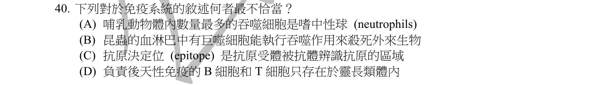
本地原卷PDF8 · 官方原答案PDF1（生物50題） · 已核對同年生物釋疑PDF2–4（未列本題）
官方採計／來源：D 原答案：D
未列本輪取得的109年度生物釋疑PDF2–4；依同年答案，不宣稱沒有其他未取得公告
主分類：Ch43 The Immune System
43.2 / B Cell and T Cell Development
目錄行2889；條目起始印刷頁960；實際目錄 PDF47
次分類：Ch43 The Immune System
43.1 / Innate Immunity of Invertebrates
目錄行2867；條目起始印刷頁953；實際目錄 PDF47
次分類：Ch43 The Immune System
43.1 / Innate Immunity of Vertebrates
目錄行2870；條目起始印刷頁954；實際目錄 PDF47
次分類：Ch43 The Immune System
43.2 / Antigen Recognition by B Cells and Antibodies
目錄行2883；條目起始印刷頁958；實際目錄 PDF47
主分類理由：43.2 / B Cell and T Cell Development：釐清B、T細胞為有頜脊椎動物的適應性免疫成員，不僅存在於靈長類；以此最小條目及章內前文核對其共同特徵。
次分類理由：43.1 / Innate Immunity of Invertebrates：昆蟲hemocytes的吞噬作用須與巨噬細胞稱呼區分；43.1 / Innate Immunity of Vertebrates：脊椎動物先天免疫細胞支援嗜中性球選項；43.2 / Antigen Recognition by B Cells and Antibodies：epitope是抗原上被受器或抗體辨識的部位。
科學說明：採D。原D已正確稱後天性免疫，錯在宣稱B、T細胞只存在於靈長類；多種其他有頜脊椎動物也有這些細胞。B稱昆蟲巨噬細胞宜精確稱具吞噬能力的血球hemocytes，不能無條件等同脊椎動物巨噬細胞；嗜中性球最多的敘述須限制在人類循環白血球等情境。Epitope在抗原上，不是整個抗體或受器本身。
來源涵蓋範圍：以本地Campbell實際目錄及列示正文作分類依據，原題限定與同年釋疑另存；不將正文小標冒充目錄條目。
教材正文：印刷953／PDF1002、印刷954／PDF1003、印刷955／PDF1004、印刷956／PDF1005、印刷957／PDF1006、印刷958／PDF1007、印刷959／PDF1008、印刷960／PDF1009、印刷961／PDF1010
補充來源：本題未另列課本外來源
另行比較：D錯在後天性免疫還是只在靈長類？
明確錯在只在靈長類；首稿誤稱D歸先天免疫已更正。教材p954有頜脊椎動物與p958起的B/T系統相合，B的hemocytes及C原句不清保留。
結論：證據確認，分類疑義已解決。完整覆核紀錄
Q41 · 11.3 / Protein Phosphorylation and Dephosphorylation 正式分類
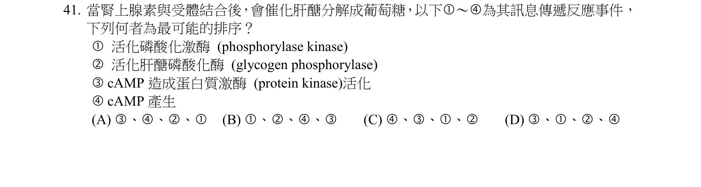
本地原卷PDF8 · 官方原答案PDF1（生物50題） · 已核對同年生物釋疑PDF2–4（未列本題）
官方採計／來源：C 原答案：C
未列本輪取得的109年度生物釋疑PDF2–4；依同年答案，不宣稱沒有其他未取得公告
主分類：Ch11 Cell Communication
11.3 / Protein Phosphorylation and Dephosphorylation
目錄行721；條目起始印刷頁222；實際目錄 PDF38
次分類：Ch11 Cell Communication
11.3 / Small Molecules and Ions as Second Messengers
本地文字目錄L724漏Ions as；本輪實看教材PDF38確認完整標題Small Molecules and Ions as Second Messengers，起始p223。原文字目錄不改。 目錄行724；條目起始印刷頁223；實際目錄 PDF38
次分類：Ch11 Cell Communication
11.4 / Nuclear and Cytoplasmic Responses
目錄行731；條目起始印刷頁226；實際目錄 PDF38
主分類理由：11.3 / Protein Phosphorylation and Dephosphorylation：依序啟動激酶及受質的磷酸化級聯，才能排列肝醣分解訊號。
次分類理由：11.3 / Small Molecules and Ions as Second Messengers：cAMP是活化PKA的第二訊使；11.4 / Nuclear and Cytoplasmic Responses：肝醣分解是訊號傳遞後的細胞質反應。
科學說明：採C（4→3→1→2）：cAMP→protein kinase A→phosphorylase kinase→glycogen phosphorylase，末者催化肝醣釋出glucose-1-phosphate。cAMP非蛋白激酶，phosphorylase kinase與glycogen phosphorylase不可因名稱相似互換。本地文字目錄的第二訊使標題缺Ions，已在年度證據依實際PDF38目錄保留差異並校正展示。
來源涵蓋範圍：以本地Campbell實際目錄及列示正文作分類依據，原題限定與同年釋疑另存；不將正文小標冒充目錄條目。
教材正文：印刷222／PDF271、印刷223／PDF272、印刷224／PDF273、印刷225／PDF274、印刷226／PDF275、印刷227／PDF276
補充來源：本題未另列課本外來源
另行比較：兩個phosphorylase名稱是否顛倒？
重算4 cAMP、3 PKA、1 phosphorylase kinase、2 glycogen phosphorylase，C正確。三個同章最小目保留，章級只計11一次。
結論：證據確認，分類疑義已解決。完整覆核紀錄
Q42 · 42.1 / Organization of Vertebrate Circulatory Systems 正式分類
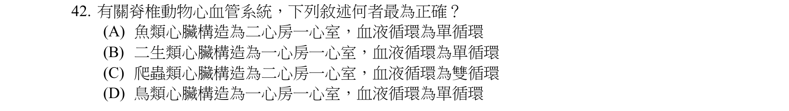
本地原卷PDF9 · 官方原答案PDF1（生物50題） · 已核對同年生物釋疑PDF2–4（未列本題）
官方採計／來源：C 原答案：C
未列本輪取得的109年度生物釋疑PDF2–4；依同年答案，不宣稱沒有其他未取得公告
主分類：Ch42 Circulation and Gas Exchange
42.1 / Organization of Vertebrate Circulatory Systems
目錄行2763；條目起始印刷頁924；實際目錄 PDF46
主分類理由：42.1 / Organization of Vertebrate Circulatory Systems：比較脊椎動物心腔及單循環、雙循環，是循環系統組織條目的直接內容。
次分類理由：無另列最小次條目；教材p925明列鱷四室例外。原C採一般非鱷爬蟲，A/B/D的心腔或循環錯置均核查，不掩蓋C範圍省略。
科學說明：採C，依一般非鱷類爬蟲的兩心房、一部分隔心室及雙循環理解。鱷類有四心腔，是原C未明列的例外；魚類通常一房一室單循環，兩生類兩房一室雙循環，鳥類四心腔雙循環。保留原題二生類用字。
來源涵蓋範圍：以本地Campbell實際目錄及列示正文作分類依據，原題限定與同年釋疑另存；不將正文小標冒充目錄條目。
教材正文：印刷924／PDF973、印刷925／PDF974
補充來源：本題未另列課本外來源
另行比較：爬蟲兩房一室是否包括鱷？
教材p925明列鱷四室例外。原C採一般非鱷爬蟲，A/B/D的心腔或循環錯置均核查，不掩蓋C範圍省略。
結論：證據確認，分類疑義已解決。完整覆核紀錄
Q43 · 49.5 / The Brain’s Reward System and Drug Addiction 正式分類
本地原卷PDF9 · 官方原答案PDF1（生物50題） · 已核對同年生物釋疑PDF2–4（未列本題）
官方採計／來源：B 原答案：B
未列本輪取得的109年度生物釋疑PDF2–4；依同年答案，不宣稱沒有其他未取得公告
主分類：Ch49 Nervous Systems
49.5 / The Brain’s Reward System and Drug Addiction
目錄行3309；條目起始印刷頁1103；實際目錄 PDF48
主分類理由：49.5 / The Brain’s Reward System and Drug Addiction：題幹的酬賞與成癮機制對應腦內多巴胺酬賞路徑。
次分類理由：無另列最小次條目；吸毒成癮直接指酬賞系統，49.5有真實最小條目，B多巴胺正確；不另外用一般突觸章稀釋主目。
科學說明：採B dopamine。腹側被蓋區神經元釋出多巴胺，投射伏隔核及前額葉等區，與酬賞學習和藥物成癮相關；不能把所有正向感受或成癮歸為單一化學物質的充分原因。
來源涵蓋範圍：以本地Campbell實際目錄及列示正文作分類依據，原題限定與同年釋疑另存；不將正文小標冒充目錄條目。
教材正文：印刷1102／PDF1151、印刷1103／PDF1152、印刷1104／PDF1153
補充來源：本題未另列課本外來源
另行比較：題目是否只問一般神經傳遞？
吸毒成癮直接指酬賞系統，49.5有真實最小條目，B多巴胺正確；不另外用一般突觸章稀釋主目。
結論：證據確認，分類疑義已解決。完整覆核紀錄
Q44 · 6.5 / Peroxisomes: Oxidation 正式分類
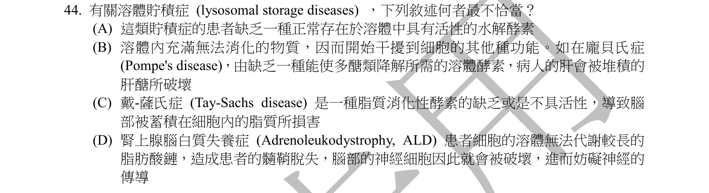
本地原卷PDF9 · 官方原答案PDF1（生物50題） · 已核對同年生物釋疑PDF2–4（未列本題）
官方採計／來源：D 原答案：D
未列本輪取得的109年度生物釋疑PDF2–4；依同年答案，不宣稱沒有其他未取得公告
主分類：Ch06 A Tour of the Cell
6.5 / Peroxisomes: Oxidation
目錄行371；條目起始印刷頁112；實際目錄 PDF36
次分類：Ch06 A Tour of the Cell
6.4 / Lysosomes: Digestive Compartments
目錄行349；條目起始印刷頁107；實際目錄 PDF36
主分類理由：6.5 / Peroxisomes: Oxidation：ALD主要關係到過氧化體VLCFA運輸代謝，將其歸溶體是錯誤重點。
次分類理由：6.4 / Lysosomes: Digestive Compartments：Tay–Sachs與Pompe等溶體儲積疾病提供對照。
科學說明：採D。X-linked ALD的ABCD1缺陷影響極長鏈脂肪酸進入過氧化體處理，非典型溶體儲積病。Tay–Sachs涉及溶體脂質分解，Pompe涉及GAA與肝醣儲積；Pompe主要累及骨骼肌、呼吸肌及部分型態心肌，不能僅以肝臟受損概括。原題及教材對所有溶體儲積病皆缺水解酵素的說法也是概括，非排除其他溶體蛋白缺陷。
來源涵蓋範圍：教材支援分類原理，未直接涵蓋的專名與細節由同年釋疑／具名補充來源補足；實讀範圍與下載限制見來源紀錄。
教材正文：印刷107／PDF156、印刷108／PDF157、印刷112／PDF161
補充來源：S44
另行比較：ALD是過氧化體還是溶體？
D原文確寫溶體，與ABCD1及VLCFA的過氧化體機制不合。Pompe肝臟過度概括及A全類概括另記，主6.5、次6.4均為真實葉項。
結論：證據確認，分類疑義已解決。完整覆核紀錄
Q45 · 6.4 / The Endomembrane System: A Review 正式分類
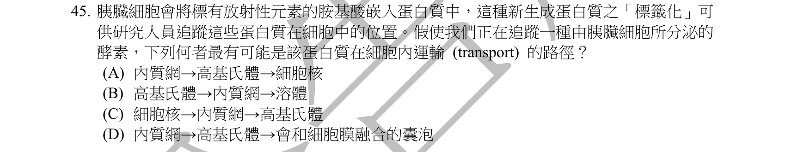
本地原卷PDF9 · 官方原答案PDF1（生物50題） · 已核對同年生物釋疑PDF2–4（未列本題）
官方採計／來源：D 原答案：D
未列本輪取得的109年度生物釋疑PDF2–4；依同年答案，不宣稱沒有其他未取得公告
主分類：Ch06 A Tour of the Cell
6.4 / The Endomembrane System: A Review
目錄行355；條目起始印刷頁108；實際目錄 PDF36
次分類：Ch06 A Tour of the Cell
6.4 / The Endoplasmic Reticulum: Biosynthetic Factory
目錄行343；條目起始印刷頁104；實際目錄 PDF36
次分類：Ch06 A Tour of the Cell
6.4 / The Golgi Apparatus: Shipping and Receiving Center
目錄行346；條目起始印刷頁105；實際目錄 PDF36
主分類理由：6.4 / The Endomembrane System: A Review：分泌蛋白由粗ER經Golgi至胞吐的完整運輸順序，屬內膜系統整合。
次分類理由：6.4 / The Endoplasmic Reticulum: Biosynthetic Factory：粗面內質網上核糖體與ER腔負責分泌蛋白起始合成加工；6.4 / The Golgi Apparatus: Shipping and Receiving Center：Golgi依cis到trans方向處理與分送。
科學說明：採D：內質網→高基氏體→會和細胞膜融合的囊泡。消化酵素先進ER腔，囊泡運至Golgi，再由分泌囊泡與質膜融合釋出；新合成分泌蛋白不是先進核再轉送。
來源涵蓋範圍：以本地Campbell實際目錄及列示正文作分類依據，原題限定與同年釋疑另存；不將正文小標冒充目錄條目。
教材正文：印刷104／PDF153、印刷105／PDF154、印刷106／PDF155、印刷107／PDF156、印刷108／PDF157、印刷109／PDF158
補充來源：本題未另列課本外來源
另行比較：D終點是否直接寫質膜？
原D完整為會和細胞膜融合的囊泡，已修正首稿簡寫。放射性胺基酸標記支援追蹤蛋白流向，不是核內DNA複製實驗。
結論：證據確認，分類疑義已解決。完整覆核紀錄
Q46 · 11.5 / Apoptotic Pathways and the Signals That Trigger Them 正式分類
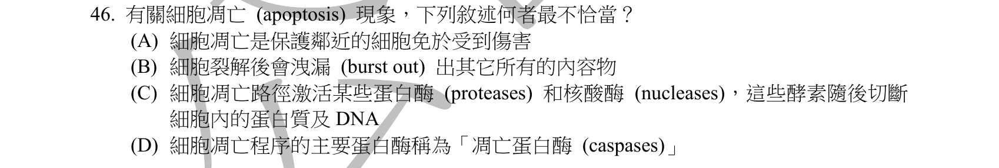
本地原卷PDF9 · 官方原答案PDF1（生物50題） · 已核對同年生物釋疑PDF2–4（未列本題）
官方採計／來源：B 原答案：B
未列本輪取得的109年度生物釋疑PDF2–4；依同年答案，不宣稱沒有其他未取得公告
主分類：Ch11 Cell Communication
11.5 / Apoptotic Pathways and the Signals That Trigger Them
目錄行744；條目起始印刷頁230；實際目錄 PDF38
主分類理由：11.5 / Apoptotic Pathways and the Signals That Trigger Them：細胞凋亡的訊號、caspase與膜包覆碎片是本地最小目錄的核心。
次分類理由：無另列最小次條目；B大量外漏最不恰當；A保護鄰細胞、C蛋白酶與核酸酶、D caspase已全讀。11.5真實子目足夠。
科學說明：採B。典型凋亡形成膜包覆小體並被清除，減少內容物外漏傷及鄰近細胞；細胞膨脹破裂大量外漏較符合壞死。Caspases是蛋白酶，可啟動下游核酸降解等事件，不等於它本身就是切DNA的核酸酶。
來源涵蓋範圍：以本地Campbell實際目錄及列示正文作分類依據，原題限定與同年釋疑另存；不將正文小標冒充目錄條目。
教材正文：印刷229／PDF278、印刷230／PDF279、印刷231／PDF280
補充來源：本題未另列課本外來源
另行比較：凋亡小體與細胞裂解外漏是否相同？
B大量外漏最不恰當；A保護鄰細胞、C蛋白酶與核酸酶、D caspase已全讀。11.5真實子目足夠。
結論：證據確認，分類疑義已解決。完整覆核紀錄
Q47 · 44.4 / From Blood Filtrate to Urine: A Closer Look 正式分類
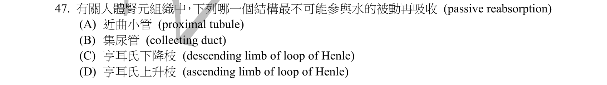
本地原卷PDF9 · 官方原答案PDF1（生物50題） · 已核對同年生物釋疑PDF2–4（未列本題）
官方採計／來源：D 原答案：D
未列本輪取得的109年度生物釋疑PDF2–4；依同年答案，不宣稱沒有其他未取得公告
主分類：Ch44 Osmoregulation and Excretion
44.4 / From Blood Filtrate to Urine: A Closer Look
目錄行2974；條目起始印刷頁987；實際目錄 PDF47
次分類：Ch44 Osmoregulation and Excretion
44.4 / Solute Gradients and Water Conservation
目錄行2977；條目起始印刷頁989；實際目錄 PDF47
主分類理由：44.4 / From Blood Filtrate to Urine: A Closer Look：各腎元段的水通透性不同，上行支不重吸收水是關鍵。
次分類理由：44.4 / Solute Gradients and Water Conservation：髓質溶質梯度與集尿管水分回收連接區段功能。
科學說明：採D亨利氏環上行支。近曲小管及下行支可藉滲透作用吸收水；上行支排鹽但不透水；集尿管水通透性受ADH及aquaporin調節，水本身仍是被動滲透，不因激素調節就變主動運輸。
來源涵蓋範圍：以本地Campbell實際目錄及列示正文作分類依據，原題限定與同年釋疑另存；不將正文小標冒充目錄條目。
教材正文：印刷987／PDF1036、印刷988／PDF1037、印刷989／PDF1038、印刷990／PDF1039、印刷991／PDF1040
補充來源：本題未另列課本外來源
另行比較：集尿管受ADH調節是否就非被動吸水？
仍是滲透，D上行支不透水才正確。次保留溶質梯度，原下行上行兩項沒有互換。
結論：證據確認，分類疑義已解決。完整覆核紀錄
Q48 · 47.1 / Cleavage 正式分類
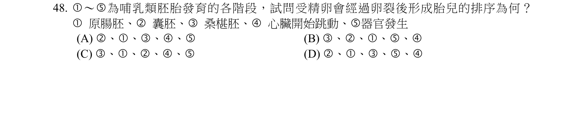
本地原卷PDF9 · 官方原答案PDF1（生物50題） · 已核對同年生物釋疑PDF2–4（未列本題）
官方採計／來源：B 原答案：B
未列本輪取得的109年度生物釋疑PDF2–4；依同年答案，不宣稱沒有其他未取得公告
主分類：Ch47 Animal Development
47.1 / Cleavage
目錄行3137；條目起始印刷頁1046；實際目錄 PDF48
次分類：Ch47 Animal Development
47.2 / Gastrulation
目錄行3144；條目起始印刷頁1049；實際目錄 PDF48
次分類：Ch47 Animal Development
47.2 / Organogenesis
目錄行3150；條目起始印刷頁1054；實際目錄 PDF48
次分類：Ch46 Animal Reproduction
46.5 / Conception, Embryonic Development, and Birth
目錄行3114；條目起始印刷頁1034；實際目錄 PDF48
主分類理由：47.1 / Cleavage：重排受精後卵裂形成桑椹胚及囊胚、再進入胚層和器官發生的先後；哺乳類胚胎發育屬動物發育核心。
次分類理由：47.2 / Gastrulation：原腸胚化建立胚層並接續囊胚階段；47.2 / Organogenesis：器官發生啟動後心臟才開始搏動；46.5 / Conception, Embryonic Development, and Birth：胎盤哺乳類的妊娠正文提供人類例證，不把物種特定時間套用全部哺乳類。
科學說明：採B（3→2→1→5→4）：桑椹胚→囊胚→原腸胚→器官發生→心跳。原題問哺乳類，囊胚通常稱blastocyst；不能把人類、海膽或蛙的發育時數套用全部哺乳類；器官發生並非全完成才心跳，5→4代表器官形成開始早於心臟搏動。
來源涵蓋範圍：以本地Campbell實際目錄及列示正文作分類依據，原題限定與同年釋疑另存；不將正文小標冒充目錄條目。
教材正文：印刷1034／PDF1083、印刷1035／PDF1084、印刷1036／PDF1085、印刷1046／PDF1095、印刷1047／PDF1096、印刷1048／PDF1097、印刷1049／PDF1098、印刷1050／PDF1099、印刷1054／PDF1103、印刷1055／PDF1104
補充來源：本題未另列課本外來源
另行比較：題幹是否限定人類？發育期可否完全分隔？
原文為哺乳類，故主目改47.1卵裂、保留47.2原腸與器官發生，46.5人類例證退為次。3→2→1→5→4為B，5指器官形成啟動而非全部完成。
結論：證據確認，分類疑義已解決。完整覆核紀錄
Q49 · 45.3 / Parathyroid Hormone and Vitamin D: Control of Blood Calcium 正式分類
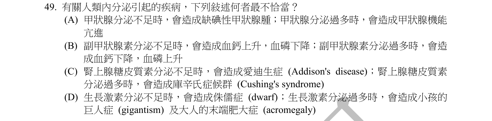
本地原卷PDF10 · 官方原答案PDF1（生物50題） · 同年釋疑PDF4
官方採計／來源：B 原答案：B
109年度釋疑維持B
主分類：Ch45 Hormones and the Endocrine System
45.3 / Parathyroid Hormone and Vitamin D: Control of Blood Calcium
目錄行3036；條目起始印刷頁1011；實際目錄 PDF47
次分類：Ch45 Hormones and the Endocrine System
45.2 / Thyroid Regulation: A Hormone Cascade Pathway
目錄行3026；條目起始印刷頁1008；實際目錄 PDF47
次分類：Ch45 Hormones and the Endocrine System
45.3 / Adrenal Hormones: Response to Stress
目錄行3039；條目起始印刷頁1012；實際目錄 PDF47
次分類：Ch45 Hormones and the Endocrine System
45.2 / Hormonal Regulation of Growth
目錄行3029；條目起始印刷頁1009；實際目錄 PDF47
主分類理由：45.3 / Parathyroid Hormone and Vitamin D: Control of Blood Calcium：PTH不足與血鈣下降、血磷上升的方向相反於原B，是錯誤重點。
次分類理由：45.2 / Thyroid Regulation: A Hormone Cascade Pathway：甲狀腺激素與TSH負回饋說明缺碘性甲狀腺腫；45.3 / Adrenal Hormones: Response to Stress：腎上腺皮質分泌異常支援Addison及Cushing選項；45.2 / Hormonal Regulation of Growth：GH在兒童及成人過多的不同表現支援其餘選項。
科學說明：採B，釋疑PDF4維持。副甲狀腺低功能典型為低血鈣、高血磷；原B方向顛倒。A所述缺碘致低甲狀腺素、TSH上升與甲狀腺腫可成立，但不是所有甲狀腺低功能都缺碘。Addison涉及腎上腺皮質功能不足，Cushing syndrome與特指腦垂體ACTH病因的Cushing disease不宜完全混用；GH過多的巨人症與肢端肥大症需依生長板狀態區分。
來源涵蓋範圍：教材支援分類原理，未直接涵蓋的專名與細節由同年釋疑／具名補充來源補足；實讀範圍與下載限制見來源紀錄。
教材正文：印刷1008／PDF1057、印刷1009／PDF1058、印刷1010／PDF1059、印刷1011／PDF1060、印刷1012／PDF1061、印刷1013／PDF1062、印刷1014／PDF1063
補充來源：S49
另行比較：鈣磷方向及釋疑A的回應是否一致？
原B低PTH寫高鈣低磷，方向倒置；釋疑維持B。A缺碘性限定、C syndrome字樣及D兒童成人分別保留，没有把副甲狀腺誤成甲狀腺。
結論：證據確認，分類疑義已解決。完整覆核紀錄
Q50 · 20.3 / Stem Cells of Animals 正式分類
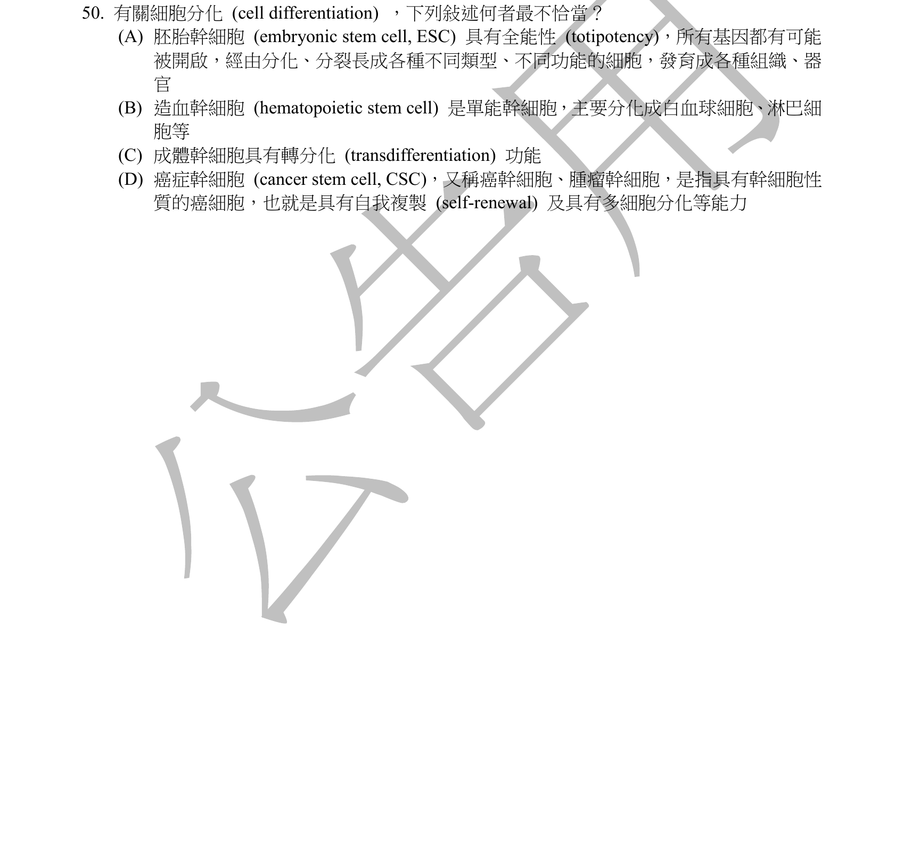
本地原卷PDF10 · 官方原答案PDF1（生物50題） · 同年釋疑PDF4
官方採計／來源：B 原答案：B
109年度釋疑維持B
主分類：Ch20 DNA Tools and Biotechnology
20.3 / Stem Cells of Animals
目錄行1267；條目起始印刷頁430；實際目錄 PDF40
次分類：Ch47 Animal Development
47.3 / Restricting Developmental Potential
目錄行3166；條目起始印刷頁1060；實際目錄 PDF48
主分類理由：20.3 / Stem Cells of Animals：各種幹細胞的自我更新、分化潛能及血球來源，是動物幹細胞條目的核心。
次分類理由：47.3 / Restricting Developmental Potential：早期卵裂球全能性及後續潛能受限，直接解釋totipotent與pluripotent的差別。
科學說明：官方B，釋疑PDF4維持。造血幹細胞是multipotent，可形成紅血球、血小板與白血球譜系，非unipotent。原A把embryonic stem cell一概稱totipotent也不符合通常指內細胞團衍生ESC的定義；教材與NIH稱pluripotent。釋疑把更早的全能卵裂球併入胚幹細胞稱呼，與標準用語有別。成體幹細胞transdifferentiation需具體實驗條件，不是所有成體幹細胞的無條件能力；癌幹細胞是具自我更新及腫瘤細胞生成能力的功能概念，不代表每個癌細胞。
來源涵蓋範圍：教材支援分類原理，未直接涵蓋的專名與細節由同年釋疑／具名補充來源補足；實讀範圍與下載限制見來源紀錄。
教材正文：印刷430／PDF479、印刷431／PDF480、印刷432／PDF481、印刷1060／PDF1109、印刷1061／PDF1110
補充來源：S50
另行比較：ESC全能性與造血幹細胞單能性是否都需指出？
是。官方與釋疑採B，科學上常規ESC為pluripotent，不能用早期卵裂球全能性抹除A用語問題；C轉分化條件與D功能定義保留，分類20.3已可明確解決。
結論：證據確認，分類疑義已解決。完整覆核紀錄
目前篩選沒有符合的題目；本年度總數仍為50題。
補充來源
查證日期：2026-09-10。使用原始研究摘要、官方資料與作者教材，不宣稱所有出版商全文已取得。詳細界線見來源紀錄。
- S06 Vane與Botting：Aspirin作用機制
Aspirin抑制cyclooxygenase及前列腺素生成，支援酵素抑制劑分類。
實讀範圍：web讀取1998作者文獻摘要及1971原研究書目；未讀1971全文。下載回應與閱讀範圍分開記錄。
原始來源1 · 原始來源2 - S14 FDA BAM Media M70實驗配方
FDA此培養基方法使用0.22µm膜過濾，支援題目一般去菌孔徑，不推論可移除所有病毒或毒素。
實讀範圍：web實讀配方過濾步驟，另保存成功取得的HTML及雜湊。
原始來源1 - S15 Ornish等2008生活方式與端粒酶試驗
30位低風險前列腺癌男性參與，24位有配對資料；三個月生活方式介入與端粒酶活性增加相關，非已證明普遍延緩老化。
實讀範圍：web實讀作者摘要的Methods、Findings、Interpretation；本地203回應為檢查頁，不宣稱下載研究全文。
原始來源1 - S25 Wu等2022 Ophiocordyceps入侵Thitarodes研究
標記菌株觀察支持O. sinensis寄生蛾幼蟲的关系，補足Campbell未列的冬蟲夏草專名。
實讀範圍：web實讀作者完整摘要；僅取宿主與寄生關係，不評估藥效。
原始來源1 - S28 Critchfield 1970 Ginkgo葉形研究
作者原研究描述Ginkgo的dichotomous venation，指出題幹平行葉脈用語限制。
實讀範圍：web搜尋返回原PDF p159的二歧葉脈段；開啟PDF失敗，未宣稱全文或圖像視讀。
原始來源1 - S31 Besserer等2006 strigolactone研究
Strigolactones刺激叢枝菌根真菌的前共生生長與能量代謝；種子萌發的敘述限定某些寄生植物，不能推廣全部種子。
實讀範圍：web實讀作者摘要，未閱讀完整PDF。
原始來源1 - S32 Martin與Lester等1999豌豆GA 2-oxidase原研究
SLN與GA失活酵素有關，突變造成slender；酵素對GA20、GA1及不同組織具有差異。題圖用簡化路徑，答案依其模型重算。
實讀範圍：web實讀兩篇作者摘要；本地203檢查頁不算研究全文。NA、LE等題圖特定對應以原題共享圖表為直接證據。
原始來源1 · 原始來源2 - S35 Park等2007 MeSA系統抗性研究
在煙草嫁接、基因沉默及酵素處理條件下，MeSA與轉回SA的作用支持系統抗性訊號；正名為methyl salicylate。
實讀範圍：web實讀作者摘要；不把煙草結論推為所有植物唯一訊號。
原始來源1 - S37 Li等1993擬南芥類黃酮突變體UV-B研究
低類黃酮突變體更易受UV-B損傷，支持UV保護機制；其他酚類及條件仍有作用，非高山全部花色的直接證明。
實讀範圍：web實讀作者摘要，未宣稱全篇圖表覆核。
原始來源1 - S39 CDC歷史抗體檢測說明
IgM與IgG可能近同時出現，抗體一般在感染後1–3週可檢出；不能以IgM/IgG單獨判定急性感染或痊癒。
實讀範圍：web實讀封存官方頁抗體時序及檢測限制；頁面標為2022更新的歷史資料。成功保存HTML；2020PDF下載403保留，不宣稱其全文已讀。
原始來源1 · 原始來源2 - S44 NIH MedlinePlus ALD與Pompe資料
ABCD1影響VLCFA進入過氧化體；Pompe涉及GAA與肝醣，主要肌肉及特定型態心臟受影響。
實讀範圍：web實讀ALD Causes與Pompe Description和Causes相關段落；僅供題目科學範圍核查。
原始來源1 · 原始來源2 - S49 NIH MedlinePlus血磷檢測原理
低PTH對應低鈣高磷，支援B方向錯置；不將此單項指標用來臨床診斷。
實讀範圍：web實讀What do the results mean的PTH、calcium、phosphate方向段落。
原始來源1 - S50 NIH Stem Cell Basics
內細胞團衍生ESC為pluripotent，與早期全能卵裂球不同，成體幹細胞分化範圍受限。
實讀範圍：web實讀Introduction與potency相關段；本地連線憑證失敗保留；未宣稱NIH全文成功下載。
原始來源1